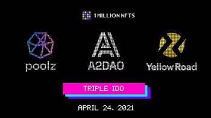
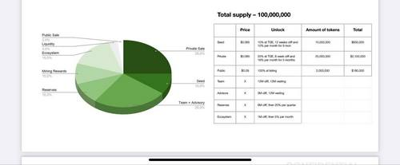
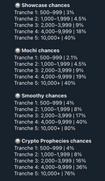

Раздел IDO
IDO Video Links:
Как выбирать IDO для жирных иксов в гостях IDO ТОП 6 IDO-площадок с низким порогом входа! Большие ИКСЫ с минимальным вложениемКак не утонуть в GameFi? Стрим с IDO Research.
IDO , IEO , IDO - взгляд взрослых специалистов на рынок Лаунчпадов
Что нужно знать об IDO и токенсейлах, сравнение лучших 7 лаунчпадов по типу Polkastarter | Cryptus
Сравнение топ 5 главных Launchpad площадок IDO : Polkastarter, BSCpad, DAO, PAID, Coinlist!
DAO MAKER - полный обзор площадки. SHO , SEED Lanchpad • Как это работает!
Обзор GameFi — новая лаунчпад площадка (GAFI) Что такое IGO (Initial Game Offering) как заработать?
Как участвовать в токенсейлах. Обучение IDO
Статья: Основы мира DeFi. Анализ и работа со Смарт-контрактами. ❗️Мастхэв к прочтению всем, кто хочет понимать то, какой токен можно безопасно покупать, а какой лучше скипнуть.
DeFiWorld Part2 Contracts (C) @kruegger
DeFiWorld 4. 3-Layer Defi. (C) kruegger
PDF (IDO Research):
Как не купить скам? Методичка по чтению контрактов от Krugger. Часть 1 ❗️ Мастхэв к прочтению всем, кто хочет понимать то, какой токен можно безопасно покупать, а какой лучше скипнуть.На что смотреть в контрактах щиткоинов? Методичка по контрактам от Kruegger. Часть 2.
Какие токены можно апрувить, а какие нельзя? Методичка по контрактам от Kruegger. Часть 3
4. Трехуровневая схема работы DeFi или сам себе DApp
IDO Channels:
IDO Research - ICO,IDO,SHO,паблик сейлов,лаунчпадовBlondychain IDO, ICO и IEO.
CRYPTUS_CHANNEL.
DreamerINC - Инфо лента проектов
Ректовальщик - IDO, ICO, NFT, *куча непонятных аббревиатур* - это всё про мою деятельность.
Podcasts IDO Research:
LEO and Kruger about Smart contracts (DD март контрактов)LEO IDO Research
IDO Research podcast
IDO Research podcast
Запись стрима 17.11.2021 Разбор подходов по мультиаккингу Олег Ректовальщик , Лео IDO Research
Инструменты и методы анализа IDO проектов
Multilogin - это решение, созданное для удобного управления несколькими онлайн-аккаунтами, которое подойдет профессионалам онлайн-маркетинга.здесь можно посмотреть за каким проектом сколько твиттер подписчиков
sms-activate.ru Виртуальные номера для приема смс и активации VK, Одноклассники, telegram и
onlinesim.ru
GitHub - iFrosta/Coinlist: Coinlist automation
Методичка по мультиаккингу
Про Coinlist
Coinlist полный обзор площадки Как участвовать, сколько возможно заработать?Coinlist - подробно о мультиаккаунтах, где брать устройства и людей для регистрации
Как создавать много аккаунтов на Coinlist чтобы не блокировали
Встреча крипто клуба на Бали выступление Татьяны Blondychain - вводная про IDO
куда залить zenoposter. Дедик амазон бесплатно в 2020г
ZennoPoster 1. Обучающий курс
ВСЕ О COINLIST | Как регистрировать 100 АККАУНТОВ и НЕ ПОЛУЧИТЬ БАН
Как не получить бан на COINLIST основные правила! Безопасность Coinlist!
Как повысить карму на Coinlist. Что конкретно делать для кармы 1000
Обзор CoinList как участвовать в токенсейле
Методчика LEO - тк IDO Research
IDO Терминология (жаргон)
1. Приват/Сид/Стратег
это разные стадии пресейл продажи токена, перед тем как он выходит на биржу. Больше
инфы от этом тут (https://t.me/idoresearch/13).
2. IDO/SHO
- это крайняя стадия продажи токена перед листингом. Зачастую, она же - Public Sale. Проводятся
такие IDO/SHO через различные лаунчпады, поэтому и разные названия. Один лаучпад называет это IDO, другой
SHO.
3. Лаунчпады
- площадка, позволяющая проекту провести их паблик сейл. Для чего проекту нужна эта площадка и
почему они не могут это сделать самостоятельно? Ответ прост - охват и аудитория этой площадки +
дополнительное привлечение внимания к проекту.
4. TGE
- как раз и есть листинг проекта. Если написано - TGE 28.04 16.00 UTC, значит токен выйдет 28 апреля
в 19.00 по Мск в открытую торговлю на бирже/юнисвапе/панкейке и его можно будет купить/продать.
5. Разлоки
- это поэтапное получение токенов приватом/сидом/стратегами. Когда вы видите в токеномике
условия, к примеру
Private price 0.1$ / 20% TGE, then 10% mounthly - значит приват получит 20% от своих токенов в день
листинга, а остальную часть 80% будет получать равными порциями по 10% каждый месяц.
К слову, на IDO/SHO этапе почти всегда 100% разлок и вы сразу получаете все свои токены.
6. TBA
- некоторая информация по проекту может идти под грифом «TBA» - это значит to be announced. То есть
на данный момент не ясно, ждите анонсов.
7. Cliff
- клиф это промежуток, в течение которого приват/сид/стратег раунды вообще не получают свои токены,
к примеру
Seed price 0.05$ / 10% TGE, cliff 2 mounths, then 10% mounthly - значит на листинге сид раунд получит 10%
своих токенов, потом 2 месяца вообще ничего не будет получать, а с третьего месяца начнет получать по 10%
ежемесячно
8. Фомо / FOMO
- состояние, когда вы продали свои токены по 1$, а потом цена улетела на 5$. Чувство
недополученной прибыли
9. Рект / Rekt
- обратное состояние, когда вы купили по 5$, а цена улетела на 1$. Грустно, больно, не
приятно. Знаю по себе 😀
10. Клейм / claim
- не всегда вы получаете свои токены на кошелек, иногда их надо заклеймить. То есть
выполнить процедуру получения токенов самостоятельно. Зачастую там очень простая процедура в 2 шага.
Прицепили метамаск к площадке где происходит клейм, нажали клейм, оплатили газ за транзакцию - получили свои
токены.
11. Инфлюенсер
- лидер мнений. Зачастую владелец паблика о крипте в телеге / владелец аккаунта в твиттере.
12. Шилить
- проводить рекламную компанию проекта инфлюенсером.
Допустим, проекту нужно внимание и приток людей. Они обращаются к инфлюенсеру, предлагают ему приват аллоку
взамен на то, что он будет про их проект рассказывать своему комьюнити и всячески призывать в нем
участвовать. Это называется «шилить»
13. Аллока / Аллокация / allocation
- сумма, которую вы можете проинвестировать в проект. К примеру -
«предлагаем вам принять участие в проекте на такой-то стадии, мин.аллока 500$ / макс 2000$» - значит вам
предлагают проинвестировать в проект и минимальная сумма вашей инвестиции 500$, а максимальная 2000$
14. Стейкинг / Стейкать / Stake
- это процесс хранения средств на криптокошельке проекта для обеспечения
поддержки всех операций на их блокчейне. То есть, у вас есть возможность дать во временное пользование свои
токены проекту, а взамен вы будете получать вознаграждение этими же токенами, но с процентом. Допустим,
staking - APY 50%. Значит вы можете застейкать свои токены в этом проекте под 50% доходности годовых.
Зачастую, доходность вам вернут в этих же токенах. Отдали 10.000, получили 15.000.
Whitelist
Белый список - это место, где люди, заинтересованные в ICO, регистрируются, чтобы выразить свой интерес к соответствующему ICO. Часто токены при первоначальном распределении токенов получают только люди, которые зарегистрировались в белом списке.
Гайд по заполнению WhiteList
Этапы пресейла проекта и их отличия
Начнем с основ.
Когда вы видите какой-то токен, который торгуется на бирже/юнисвапе, знайте, на нем уже заработали на ранних
стадиях. И скорее всего, хорошо заработали. Заработали те, кто узнал о проекте до его публичного листинга и
смог в него попасть на любом из пресейл этапов.
Всего их бывает несколько:
1. Seed / Strategic - это самые ранние инвесторы/фонды + стратегические инвесторы, которые полезны проекту.
Здесь самая сладкая цена, для примера 0.1$ за токен
2. Private - частные приват пулы, медиапартнеры, прямые аллокации на инфлюенсеров (в том числе на
дрочетрейдеров сигнальщиков) и тд. Здесь цена уже примерно 0.15$
3. Public sale (они же IDO/SHO) - обычно здесь крайне небольшая общая аллокация и цена в 0.25$. Проходит
паблик сейл зачастую по системе Лотерея/ФКФС/Площадка с очередью/LBP/Лаунчпад, либо все, что считает нужным
проект для освещения себя. Так как это крайняя стадия перед листингом - здесь задача у проекта в том, чтобы
могло поучаствовать максимально возможное количество людей, дабы проект ушел в массы и о нем начали
говорить.
Далее идет листинг - и вы видите цену в 1-1.5$ и токен в свободной продаже. Цифры даны абсолютно примерные,
так как на листинге разброс огромен, все зависит от проекта. Это может быть и х5 от цены привата, и х50. 💵
💵 💵
Теперь разберем по пунктам.
1️⃣ Сид/Стратег
Сюда практически невозможно попасть напрямую, так как отбор происходит исходя из ценности, которую вы можете
принести проекту. Деньги - давно не ценность в крипте. Деньги есть у всех. Я не могу прийти в проект и
сказать - «здарова отец, у меня есть 🍋$, можно мне в ваш проект проинвестировать 10.000$?» Мне скажут
«Нет», потому что ничего кроме денег я не смогу дать. А фонды дадут лояльность аудитории, медиа стратеги
дадут охват + поддержку на последующих этапах. Для проекта это выгодней, поэтому эта аллокация уйдет к ним
2️⃣ Приват ❗️
Здесь уже можно попытаться разговаривать за аллокацию с рук-ом отдела маркетинга проекта (COM), проходить
разные отборы, заполнять формы на участие и прочее. Но самый проверенный маршрут - заходить через приват
пулы. Приват пул - это полузакрытое комьюнити инвесторов, которое объединил лидер приват пула для того,
чтобы договариваться с проектами на максимально возможные аллокации.
Самые проверенные и надежные в ру комьюнити - A2DAO и BULK. Первый уже токенизировался, второй вот вот это
сделает.
Руководитель (СЕО) приват пула для своего комьюнити выбивает в проектах приват аллокации, допустим в
100.000$ - и предлагает эту инвестицию в проект уже своим участникам. Каждый вкидывает 1000-2000$, они
собирают 100.000$, отправляют проекту и получают за это токены по метрикам разлоков. Обычно сам пул
закладывает в цену 5-10% за всю организацию работы и всю суету с последующими раздачами участникам их
токенов (это называется fee).
От вас на этом этапе будет требоваться только быстро закинуть деньги при объявлении такого сбора на пул
(предварительно разобрав проект, в котором вам предлагается участие) и ждать свои токены. Почему быстро?
Потому что обычно такие пулы закрываются за пару-тройку минут, так как желающих занести в 2-3 раз больше,
чем мест. Это называется FCFS. First come - first serve. Или в простонародье - «кто успел, тот и съел»
3️⃣ Паблик сейлы ‼️
Они же IDO/SHO/Public sales. Здесь уже у нас появляется огромное количество возможностей для участия. Паблик
сейлы проходят на разных площадках, зачастую, один проект дублирует свой паблик сейл на нескольких, дабы
увеличить охват аудитории к проекту. (пример - недавние IDO Cere, DeHive, disBalancer, HAPI и грядущий
1mlnnft, боже упаси)
Такие площадки называются лаунчпадами. Вы холдите токен этого лаунчпада, что дает вам возможность
участвовать в сейлах на этой площадке. Участвуете в лотерее на сейл, если выигрываете - вам предлагается
аллокация на 200-500$ на покупку, покупаете по паблик цене токен, ждете листинг, забираете свои иксы,
покупаете себе новые игрушки.
Проблема одна. Участвующих в разы больше, чем мест.
НО! Условия участия на этих площадках тоже разные. И здесь, как раз, я и хочу вам рассказать про каждую из
этих площадок и оценить их по модели «инвестиция в площадку/предполагаемая прибыль/качество проектов,
которые на площадке запускаются + регулярность таких запусков»
Пройдемся по всем. По DAOmaker, Poolz, Polkastarter, Hacken, Yellow Road, BSCPAD, KICKPAD, TrustSwap, A2DAO
и прочим представителям этой интересной истории развития крипты 😄 Так как я принимаю в них участие и могу
показать все на своих цифрах и своем опыте
💥 1 млн нфт, 1 млн нфт, 1 млн нфт 💥
Каждый паблик сейчас промит это IDO, говоря о том, какой же крутой это проект и
призывая всех участвовать в их сейлах на 3х лаунчпадах сразу!
И казалось бы, ну вот же наконец тот самый NFT единорог с максимально понятной идеей покраски пикселями и
огромной оглаской в сообществах. Но, все получилось намнооого банальней🙂
Форсят его в пабликах, потому что 70% тех, кто о нем пишут получили прямые аллокации в приват на этот проект
и сейчас нагоняют вокруг него шума, дабы в этот хайп потом разгрузить свои токены 🤷♂️
Сам проект понятен максимально, но вот спрос на их токены со стороны вторичного рынка - не понятен
абсолютно)
💭 Я вижу тут 2 сценария.
Либо после TGE он совсем никому не будет нужен до какого-то крупного инфоповода (допустим, Маск решит
выкупить их токены и написать на доске слово DOGE), либо он сразу улетит в космос🚀 Так как разлок у всех
раундов всего 15% (кроме IDO), а маркеткап всего 1.000.000$.
Поэтому, на мой взгляд тут либо х3-х5, либо сразу х50+ и проект станет жирной пиксельной точкой в развитии
NFT индустрии⚡️
Ну и конечно, возможный ключевой фактор успеха тут зашит в названии. И это слово NFT. Почти никто не
понимает, а что же это такое, но так как вокруг нфт сейчас дикий хайп - все хотят быть к этому причастны и
попробовать на этом заработать)
Не могу тут ни вспомнить слова одного популярного исполнителя: «Если это что-то не понятное, значит что-то
очень крутое»
Сам буду принимать участие в их IDO, так как попал к ним через A2DAO.
И очень интересно понаблюдать, что из этого в итоге получится на TGE.
✔️ И да, половину лить буду в первый стакан - а дальше смотреть, как откупают и где психологический уровень
поддержки цены. 
💥 UPDATE 💥
Не прошло и дня как от моего поста (https://t.me/idoresearch/15) они выкатили новый апдейт по своей
токеномике 🙂
Полностью выкинули из нее паблик сейл и оставили только IDO на лаучпадах.
А капу токенов, которые планировались под паблик сейл (400.000 токенов) - перебросили в дальнейший майнинг.
Тем самым, маркет кап на старте будет всего 600.000$.
А это, на минуточку, всего 120.000 токенов по цене в 5$. Сто двадцать тысяч. И все, первые две недели больше
токенов в обращении не будет.
У проекта с охватом в 2.1к фоловверов на медиуме и поддержкой 3х лаунчпадов кап 600.000$.
✅ Плюс в своей статье на медиуме они попытались донести, что токены очень выгодно именно холдить, а не сразу
лить в стакан. Так донесли, что даже я задумался над этим 🤣
💭 В общем, супер интересно что из этого выйдет. Будем наблюдать сегодня вместе на листинге в 19.00 по Мск.
Теперь думаю, стоит ли их сразу лить, либо стоит подождать запуска платформы и уже тогда реагировать на
спрос 😄
ОЦЕНКА ПРОЕКТА
Как оценить проект? Этот вопрос мне задают чаще всего. Куда смотреть, что считать и с чем сравнивать?
Обычно, перед принятием решения об инвестиции, я оцениваю токеномику, идею, команду проекта, маркет кап и разлоки всех раундов
Разберем на конкретном примере, допустим, проекта KelVPN, один из крайних проектов, в который я зашел на этапе привата.
 Kel-VPN-tokenomics.jpg
Саму токеномику проекта вы можете увидеть внизу поста.
Пост по криптопонятиям слов был тут (https://t.me/idoresearch/18).
Поехали:
1. Команда + сам продукт. (https://kelvpn.com/) Смотрим офф сайт, изучаем команду.
Что делала команда ранее, сколько человек в себя включает, что за идея.
В данном случае - идея продукта супер понятна, VPN на блокчейне. Никаких серверов, сервера заменяют ноды.
Пилят продукт на Cellframe, который дал хорошие иксы от привата.
Команда - для меня абсолютные ноунеймы. Судя по linkedin выходцы из demlabs. Не фонтан, но пойдет.
2. Фонды. (kelvpn.medium.com)
Лезем в твиттер/медиум, ищем инфу о фондах, которые уже зашли в проект.
Для чего? Фонды это всегда лояльность со стороны хомяков, когда токен уже залислился.
Все руководствуются мнением, мол «если большой фонд зашел, значит они что-то видят в проекте,
пожалуй куплю их токен на листинге». Видим тут Moonwhale, Magnus, Titans, APE, A2.
Набор фондов не плохой, но далеко не топовый. На мой взгляд, тут все ОК.
3. Самое интересное - метрики (link).
Учу вас правильно их читать
Общий саплай токенов 100.000.000 KEL. Проект предлагал войти на этапе приват раунда.
Имеем:
Private / price 0.085$ / 20% at TGE, 8 week cliff and 16% per month for 5 months
Что это значит. Цена, по которой мы зайдем будет 0.085$. 20% токенов мы получим на TGE (листинге) проекта,
затем 8 недель мы не будем ничего получать (это называется cliff), и после по 16% в течение 5 месяцев.
Итого все свои токены мы получим через 7 месяцв (2 месяца клифа + 5 месяцев разлоков по 16%).
В целом, метрики ок, но нам необходимо их сравнить с другими этапами пресейла.
И вот самое интересное открывается именно тут.
Если мы посмотрим на seed, мы увидим разлок 10% на ТГЕ, а затем 12 недель клифа (против 8 недель у привата).
Что это значит для нас? что после TGE цену как следуют прольют, так как токены будут у всех на руках,
а после этого 2 месяца не будет новых токенов в рынке. И первые - кому их дадут, будут именно приват раунды.
То есть стакан будут греть покупатели для нас 2 месяца и мы разгрузимся именно в него,
пока seed будет еще месяц ждать своих токенов. Мне очень нравится.
Разлоки команды - 12 месяцев клиф, значит в первый год токенов команды на рынке мы не увидим.
Тоже лайк, значит у команды нет задачи пролить проект за полгода и забыть о нем.
Как итог - для меня очень даже хорошие метрики.
4. Market cap. Это оценка проекта на момент его листинга на бирже.
Складывается из количества всех разлоченных токенов ВСЕХ РАУНДОВ на момент листинга, умноженных на цену паблик сейла.
Имеем разлок у сида 10%, у привата 20% и 100% у паблика. Умножаем на количество токенов,
выделенное на каждый раунд (amount of tokens), получаем 1.000.000 токенов у сида,
5.000.000 у привата и 2.000.000 у паблика. Итого 8.000.000 токенов будет
в обращении * 0.09$ (цена паблика) = 720.000$ маркеткап +- несколько тысяч на всякие бонусы/дропы/промо и тд.
Все, что ниже 1 млн, отлично. Так как адекватный маркет будет в районе 4-5 млн
(по опыту других проектов это минималка). А это даст нам x5-x7 +++
Какая именно будет цена - будет зависить исключительно от желающих покупать этот токен после листинга.
А тут уже в ход вступает пиар/промо/хайп/несколько IDO на разных площадках.
Ну и плюс сама идея проекта конечно.
Как итог:
Вижу для себя вполне прозрачную идею с ВПН, которую ранее никто не пилил,
но вангую появление аналогичного продукта в ближайшие пару недель от hackenAI.
Хорошие метрики, нормальный маркеткап, открытая (хоть и не медийная) команда + фонды второго тира на борту.
Резюме - можно заходить с пониманием, что скорее всего с первого разлока в 20% мы окупим весь
наш инвест и остальные токены 80% для нас будут полностью бесплатными.
Оценка - твердая 4/5. Не гем, но и свой приват должен отбить хорошо.
DAO maker (Разбор)
DAO maker
. Они же «собаки», они же «дао пауэр ренжерс». 🐶 af-afРубрика #разбор_лаунчпадов
Даомейкер для многих в ру комьюнити стал проводником в мир лаунчпадов и IDO/SHO. Начнём с того, что даомейкер сделал миллионерами многих из ру комьюнити, так как попасть к ним в приват по цене токена 0.1$ не представляло никакого труда осенью 2020. Кстати, здесь надо отдельно выделить Мудака (автор канала the VSЁ) и то, как он на полном энтузиазме чуть ли не уговаривал своё комьюнити заходить в даомейкер, как следствие, сделал многих людей миллионерами. Тогда это казалось авантюрой, а сейчас 2000$ вкинутые осенью в приват даомейкер превратилась в 160.000$. Можешь же, когда не бухаешь) ✔️Теперь к проекту. DAOmaker были первыми, кто так доступно показал модель «холдишь токены дао, выигрываешь в лотерею на SHO, льёшь все в стакан, забираешь свои иксы». Сама метрика и система работы лаунчпада подразумевает под собой деление холдеров токена DAO на тиры. Чем больше токенов вы холдите, тем выше у вас шанс выиграть в лотерею. Примерные шансы на их последние SHO прикрепляю тут (https://prnt.sc/12b08cy). Раньше это работало именно так, но с недавних пор произошли некоторые изменения. Любой лаунчпад, который разрастается - со временем сталкивается с проблемой. И эта проблема - сумма общей аллокации, которую проект(назовём его проект N) выделяет для данного лаунчпада. Допустим, у лаунчпада 1000 холдеров. Тотал аллокация на 100.000к$ подразумевает под собой 400 билетов на 250$. Это хорошо, так как выиграть может приблизительно 40% холдеров токена. Это вызывает эйфорию у победителей и фомо у тех, кто не попал - как следствие докуп токенов лаунчпада и увеличение количества его холдеров. Но, через месяц 1000 участников превращается в 3000. А сумма общей аллокации от проектов N не меняется, так как выбить бОльшую достаточно проблематично. Ведь проекту N интересней провести 2-3 одновременных паблик сейла на разных лаунчпадах, тем самым привлекая к себе больше внимания и охвата аудитории. Значит победителей будет столько же, 400 человек, но вот участников уже 3000. А это вызывает недовольство и постоянный флип токенов в стакан после не выигранной лотереи. 💭Что делать в этой ситуации? Решение есть и оно понятно - увеличить максимальную аллокацию. Как это сделать? Стать инкубатором собственных проектов. Ведь можно бесконечно разговаривать и договариваться за аллокацию для своих холдеров с левыми проектами, а можно зайти в сид/стратег инвесторы проекта на раннем этапе и заранее согласовать, допустим, аллокацию в 200-500к$ для своего комьюнити. Либо вообще набрать разработчиков, взять идею и запилить свой проект. Соответственно, обеспечив своё комьюнити слотами на пресейл стадиях проекта + на его паблик сейле на своём же лаунчпаде. Именно так и сделал DAOmaker, который разделил свои SHO на две разные модели инвеста. Теперь: 1. SHO - как и раньше паблик сейл 2. Seed SHO - инвест в раннюю стадию проекта. Это и есть та самая, заветная, пресейл стадия участия в проектах для холдеров DAO. Плюс, выкатили обновлённый сайт, даопад и сразу 10 анонсов предстоящих SHO. Казалось бы, ну чем не роскошь, надо влетать на всю котлету пока дают. Но есть несколько нюансов. ▪️ Первый. Они изменили систему регистрации в SHO. Теперь ваши дао токены, которые вы держите в холде - приравниваются к daopower. И вы должны сами их своего общего количество выделять на сейл столько, сколько вы считаете нужным. Ведь если вы выиграете - это количество будет заблокировано у вас на 15 дней. Пример: У вас 10к DAO. Это равно 10.000 DAOpower. Вы регистрируетесь на sho и отправляете для участия все 10к. Если вы не выиграли, вам возвращают вещи 10к даопавер. Но, если выигрываете аллокацию, то после этого 15 дней курите, пока эта «дао сила» не восстановится. А тут, как назло, новое SHO запускается через 4 дня. Что делать? Либо докупать с рынка, либо дробить свой стек даопавер. Типо, вот сюда я кину 2к так как проект так себе, вот сюда кину 4к, как раз если 2к первые вернутся к этому времени, у меня останется ещё 6к, я из раскину ещё на 2 проекта. В общем, получаем мини «казино - лотерейку» (тут не будет отсылки на всем известный видос про рот какого-то казино, хотя я частенько это говорю про себя, когда не выигрываю 🙂 Что имеем - теперь проектов на даомейкер стало в разы больше. Запуски идут почти каждый день, но надо думать и оценивать их, перед тем как тратить на них DAOPOWER. Что-то осознанно скипать, куда-то залетать на всю котлету, куда-то ее дробить. Здесь нам и поможет разбор проектов и их метрик, а как это делать, я писал в посте выше (https://t.me/idoresearch/24). ▪️ Второй нюанс - майский разлок привата. Что в любом случае скажется на цене, так как многие будут фиксировать свой разлок в стакан. Циркулейт токенов сейчас - 16млн, а после майского разлока он составит 32млн токенов. Это х2 от текущего объема в рынке. Тут вы сами понимаете, какое будет давление на стакан. Да, лить будут не все, но даже 1-2 млн новых токенов в рынке могут дампануть цену на день другой очень хорошо. Поэтому мой совет - если хотите зайти на данном этапе, велком. 500-2000 DAO будет достаточно для того, чтобы потыкать в их SHO и попытать удачу в лотереи. Но, не на всю котлету, так как возможность подкупить дао ближе к 10-11 мая на пролитой цене у вас обязательно появится, как мне кажется.  Шансы () на выигрыш разных тиров приведу на основе последних 4х проектов. Как итог, моя оценка 8 собак из 10-ти этому лаунчпаду!
Гайд по созданию и использованию вашего ETH (erc-20) + BSC (bep-20) кошелька.
Когда вы участвуете в различных вайтлистах, IDO, паблик сейлах и приватах у вас всегда просят заполнить
поле с вашим ETH/BSC кошельком. Многие вставляют туда свои биржевые (к примеру бинанс) кошельки,
но это огромная ошибка. Сейчас объясню почему.
Когда вы указываете свой биржевой кошелек, токены вам отправят именно на него.
И если на этой бирже токен еще не торгуется - вы просто останитесь без них.
И будете ждать, пока он начнет там торговаться. А к примеру, тот же бинанс,
может и не залистить ваш токен, в сейле которого вы принимаете участие.
Поэтому вы просто спалите ваши деньги за аллокацию и останитесь ни с чем.
Это и есть причина того, что все вайтлисты/сейлы всегда пишут одно и то же:
«НЕ УКАЗЫВАЙТЕ СВОЙ БИРЖЕВОЙ КОШЕЛЕК В ПОЛЕ ETH КОШЕЛЬКА».
✔️Для того, чтобы не влипать в такие ситуации - вам и нужен отдельный ETH/BSC кошелек.
В данном топике я разберу именно метамаск, так как по мне он максимально удобен для использования. Что такое метамаск?
Метамаск - это ваш отдельный кошелек, который имеет 1 адрес для всех токенов на всех сетях,
которые вы будете к нему подключать. Будь то BSC сеть или еще что-то. То есть вы отправляете,
допустим, эфир или usdt за вашу аллокацию с этого адреса и на этот же адрес вам приходят
ваши токены, которые вы оплатили. А дальше уже можете делать с ними что хотите.
Хоть в юнисвап лить, хоть на биржи любые отправлять, которые этот токен поддерживают.
Теперь к гайдам:
Гайд на скачивание кошелька и установку:
https://youtu.be/XcQLQqkZFL0
Тут все максимально просто и понятно. За это отдельное спасибо ребятам из Incrypted (https://t.me/incrypted).
❗️НИКОМУ И НИКОГДА не говорите свою seed фразу, которую вам дают при создании кошелька.
Ваше сид фраза - это доступ к вашему кошельку. Ее должны знать только вы.
Поэтому переписали ее себе на листочек и убрали туда, где его никто не найдет.
Гайд на добавление в метамаск сети BSC:
https://incrypted.net/use-metamask-for-binance-smart-chain/
Итог. Теперь у вас есть 1 кошелек, который поддерживает и ETH и BSC сети.
Вы просто переключаетесь между ними и все. Поэтому когда вас просят в форме оставить
ваш ETH кошелек - вы смело берете адрес своего метамаска и вписываете туда.
Так как в метамаск можно добавить АБСОЛЮТНО любой токен, вне зависимости от того,
какие биржи его поддерживают.
Что такое LBP?
Что такое LBP?
рубрика #изучаем_азы_как_не_ректануться После поста о GlobeDX и о их грядущем сейле токена $GDT на балансере меня засыпали в личке вопросами, что такое LBP. Сейчас объясню что это и как это работает на примере того же Globe. Если вы знакомы с Uniswap/Pancake - то это аналогичный пул ликвидности, но со своими тонкостями. LBP - это пул ликвидности именно на сайте https://balancer.exchange/#/swap в который добавляется токен (по которому проходит паблик сейл) и его пара, которая и обеспечивает ликвидность (USDC, DAI или еще какой-то стейбл). В данном случае добавляется $GDT / USDC. Как же в этом случае формируется цена? А формируется она как раз соотношением в пуле на текущий момент токенов и USDC. То есть, если в пуле находится 1000 GDT и 1000 USDC, то токен стоит 1$. Если же кто-то по этой цене выкупает 500 токенов, то получается, что он забирает из пула 500 GDT и кладет туда 500 USDC за это. Соответственно, в пуле становится 500 GDT и 1500 USDC. Какую цену значит мы получаем? Правильно, 3$ за токен. Именно так и работают все пулы ликвидности. ❗️НО в чем особенность именно пулов ликвидности на балансере? Там ликвидность добавляется порционно. К примеру, каждый час. Если мы посмотрим на скрин (https://prnt.sc/12rqtn1), то увидим, что Globe выделяют на LBP 14млн токенов. Изначально в пуле будет соотношение 95:5 (USDC:GDT), а финальное соотношение к концу LBP 30:70. Значит что в пул будут добавляться токены GDT частями, допустим каждый час по 300к штук из 14млн. И если в первый час в пуле будет всего 300к токенов доступных к выкупу, то спустя час добавят еще 300к. Потом еще 300к и тд. И добавлять будут постоянно вплоть до самого окончания сейла. А это значит, что цена будет идти вниз и токен будут откупать по той цене, которая покажется покупателю доступной. Именно так и устроен LBP. Это паблик сейл, который предполагает снятие сливок с тех, кому не терпится закупиться. Ведь если люди готовы взять по 4$ токен, который будет стоить, допустим 2.5$, спустя 24 часа, почему бы им не дать этого сделать?) Чтобы вам было понятно - LBP это аукцион, определения психологического уровня цены, по которой люди могут откупить токен. И самая его прелесть в том, что движение цены невозможно предсказать. Где-то все идет строго на понижение, как в LBP HORP (скрин (https://prnt.sc/12rr97o)), а где-то цены касается уровня поддержки и ее начинают откупать очень сильно. Причем так сильно, что те, кто ждал цену ниже - не выдерживают и тоже начинают откупать. А это вызывает постоянный рост и рост цены. Этот сценарий можно было увидеть на LBP HydraDX (скрин (https://prnt.sc/12rrbnz)). ✔️Поэтому когда вы участвуете в LBP вы всегда должны заранее для себя определить ту самую «психологически комфортную» для вас цену покупки токена. Не факт, что до этой цены дойдет уровень, конечно, но если дойдет - принимать решение о покупке. Ведь если вы нащупаете дно и после этого цена пойдет вверх у вас будет шанс заработать на токене прям в моменте LBP, закинув его обратно в пул и забрав с плюсом свои USDC.
Движение цены токена. Разбираем причины пампов/дампов
Движение цены токена. Разбираем причины пампов/дампов
https://incrypted.net/token-price-movement/
Разбор Hacken Foundation
Разбор проекта Hacken Foundation
(https://hackenfoundation.com/).
рубрика #разбор_проектов и #не_финансовый_совет
Итак, что имеем.
Проект Hacken Foundation. Они же Hacken Club. Весь проект направлен на кибербезопасность.
Аудит проектов, защита от ддос атак, защита бирж от взломов, сбор аналитики и куча всего полезного.
Главный токен экосистемы - токен HAI (https://www.coingecko.com/ru/%D0%9A%D1%80%D0%B8%D0%BF%D1%82%D0%BE%D0%B2%D0%B0%D0%BB%D1%8E%D1%82%D1%8B/hackenai). Теперь чуть подробней:
Почему я обратил внимание именно на этот проект и на этот токен?
Все просто. Токен работает на сети VeChain. Никакой тут эфирной сети с комиссиями на покупку по 200$.
Думаю в текущем моменте с ценой на газ в сети эфира для вас это будет суперактуально.
Сам проект работает с октября 2017г, насколько я понял, но токенизировались они не так давно.
Одна из их площадок и продуктов, кстати, это cer.live - является поставщиком данных по кибербезу для coingecko.
А коингеко, на минуточку, это топ 1 сервис базы данных по криптоаналитике на текущий день.
Так же знаю, что часть данных они передают на Binance, и подрублены к их экосистеме.
Плюс, они выкатили приложение HackenAI (доступно в аппстор/гуглстор), кстати,
максимально информативное и понятное, за это большой респект ребятам.
Ну и с февраля 2021 реализовали два проекта в качестве инкубатора - это HAPI и DDOS. Оба в том же направлении,
в кибербезопасности. Запуски проектов происходят в несколько этапов, за HAI токен на HAI раунде,
потом IDO на лаунчпадах и вперед на TGE. Кстати, именно благодаря покупке HAI по 0.12$ в феврале
я смог купить HAPI по 4$, пролив его потом по 140$ на TGE. Но о механике работы HAI раунда я напишу чуть позже,
так как инфы там супер много и она не самая простая для понимания новичкам.
💭Но, что мне определенно нравится в проекте - так это их направленность на качество самого
продукта в первую очередь. Как мне показалось, ребята не про деньги, а про сервис.
И сервис по кибербезопасности они дают очень сильный, хоть и не особо видный для простых смертных,
так как это все происходит в бэклогах сотрудничества с компаниями/биржами/проектами.
Ну и супер нравится подход к работе их CEO Дмитрий Буторина, который открыто дает
интервью и регулярно отвечает на вопросы комьюнити. Всегда ценил открытость в крипте,
когда в 80% случаев у многих CEO за аватаркой в телеге стоит школота из 9Б класса,
которая решила заработать на хайпе.
Теперь чуть подробней про сам токен:
Если посмотреть за ценой самого HAI, то можно увидеть, что у нее идет резкий подъем
до IDO нового инкуб проекта и слив после. Сливают, потому что пока не ясно,
что делать с самим токеном HAI после проведения HAI раунда. Сейчас увидел только возможность
отправить токены в стейкинг для фарма HAPI и DDOS, но доходность там пока не ахти.
Но даже на этих горках перед и после IDO нам можно покататься.
Сразу скажу, что это не проект для быстрого флипа. Скорее - это про долгосрочную инвестицию
с возможность участвовать на токены HAI в их HAI раундах. Не исключено, что в ближайщем
будущем мы увидим там проекты на Солане, так как туда едут HAPI (инкуб проект) со своими юзкейсами.
Про это я писал тут (https://t.me/idoresearch/32). Поэтому за проектом буду пристально
следить и потихоньку подбирать его с маркета. Ведь не весь ваш портфель должен состоять
только из токенов для быстрого флипа. Там должны быть и стейблы, и мем токены, и скам токены,
и токены для стакана, ну и токены в долгосрок.
Кстати, сегодня у Incrypted в чате (https://t.me/incrypted_chat) будет АМА хаккен,
буду читать и задавать вопросы. Обычно на таких АМА СЕО немного приоткрывают тайны и делятся инсайдами,
что ждать от проекта в ближайший месяц/два. Предлагаю вам тоже понаблюдать за этим действом.
Начнется оно в 18.00 по Мск. Удобно, что трансляция текстовая и ее всегда можно перечитать,
чтобы для себя окончательно все понять. Ну и оставлю в ссылках русскую группу проекта,
думаю там тоже смогут ребята ответить на ваши вопросы.
❗️ Еще раз, это не призыв к действию или к покупке токена.
Я лишь даю вам почву для размышлений и провожу свой скромный ресерч проекта.
Решение в любом случае за вами.
Русская группа проекта - Hacken Foundation (HAI) Russian Official (https://t.me/joinchat/JI5Y49KPGkw0MDYy)
Официальный сайт - https://hackenfoundation.com/
CoinGecko - https://vk.cc/c1Swhs
Признаки SCAM проектов
❗️Явные признаки SCAM проектов.
рубрика #изучаем_азы_как_не_ректануться По результатам вашего голосования эта тема набрала самое большое количество голосов, поэтому начну свою серию разборов важных тем именно с нее. Итак, поехали: Сейчас крипторынок перегрет очень сильно. Огромное количество вайтлистов, форм для участия, сейлов, пресейлов и прочего. Люди несут свои деньги во все подряд, в надежде поймать те самые иксы. Несут, абсолютно не разбираясь куда и зачем, просто с одной простой позицией - «SHUT UP AND TAKE MY MONEY». Иногда конечно даже такие скамы могут дать какие-то иксы, но зачастую это все заканчивается достаточно плачевно. Поэтому в этой статье мы разберем основные моменты, на которые стоит обращать МАКСИМАЛЬНОЕ внимание перед тем, как принять для себе решение об инвесте. 1. Noname команда. Это не значит, что за спиной у проекта должна быть исключительно команда, которая уже успела запустить кучу крутых продуктов. Нет. Сейчас такой рынок, что абсолютный ноунейм может дать крутую идею, за 2 недели найти поддержку фондов и партнеров и выпустить в рынок интересный продукт. Ноунейм значит то, что вы вообще не можете найти никакой информации о команде. Ни на офф.ресурсах, ни в группах в телеге, ни на медиуме. Команда, которая не показывает своих лиц, не дает ссылки на Linkedin и кроме аватарки в телеге там ничего за спиной. Это первый важный звоночек. 2. Проведение AMA. AMA или «Ask Me Anything» - это интервью СЕО проекта, которое он дает на каком-либо источнике, где отвечает на вопросы комьюнити. Зачастую на АМА могут задать неудобные вопросы, поэтому если СЕО не планирует опозориться, он просто не дает этих АМА. Тоже важный звоночек, так как любой проект, который хочет себя позиционировать в рынке после TGE должен рассказывать о своих планах, о своих идеях и доносить ценность своего проекта для комьюнити. В противном случае, это просто баблосбор, который закончится фразой «ну я же вам ничего не обещал, поэтому сори, бабки в карман и я пошел». 3. Поддержка фондов. Это очень значимая вещь, так как у любого фонда есть свой ресерч менеджер/ресерч отдел, который на старте фильтрует откровенный скам и фонд в него не заходит. Фонды могут добавляться к проекту на протяжении всего этапа до TGE, поэтому если до TGE осталось несколько дней, а проект за все время своего существования никого еще не привлек - это тоже повод задуматься. 4. Идея проекта и его суть. Крайне интересный момент, так как идейно-новых проектов сейчас появляется не так много, зачастую почти все пытаются выбрать действующего конкурента в рынке, взять его модель, немного улучшить и выйти в рынок с позицией «А ВОТ У НАС БУДЕТ ЛУЧШЕ». Так себе идея. Пока они делают то, что по их мнению «будет лучше», действующий конкурент просто добавить это себе в две кнопки и ценность такого «нового» проекта сразу изчезнет. 5. Реферальная система на пресейл/паблик сейл. В целом - это не фактор скама, а фактор привлечения внимания к проекту. Но на этом этапе есть очень важный триггер. Пока работает реферальная система привлечения внимания - фонды точно заметят этот проект. И вот если за это время они в него не зашли - большой повод задуматься о том, что кроме рефералки и 50к+ подписчиков в твиттере/телеге там ничего нет за спиной. 6. Период от создания проекта до запуска TGE. Если вы видите, что от создания офф.канала в телеге до выхода на TGE у проекта ушло менее 2х недель - это супер важный звоночек. Значит проект быстрее хочет выйти в рынок и быстрее собрать деньги на пресейле/паблик сейле. За 2 недели невозможно построить нормальную экосистему, набрать партнерств, донести ценность покупки токена после паблик сейла. Скорее всего, команда преследует одну простую мысль в таком случае: «побыстрее забрать деньги у тех, кто готов занести и соскамить проект». Всегда проводите свой собственный ресерч перед тем, как куда-то что-то оплатить. И если вы все же заносите в скам в надежде разгрузиться в тех, кто зайдет позже - делайте это на ту сумму, которую готовы спокойно потерять.
Изменение механики работы лаунчпада Polkastarter
Polkastarter.
рубрика #разбор_лаунчпадов Сегодня утром $POLS залистили на бинанс (https://t.me/binance_announcements/2730), а значит самое время написать про моего фаворита среди лаунчпадов на текущий момент. Кстати, сама цена POLS сейчас в районе 1.9-2.2$, хотя после анонса о листинге ее разогнали до 3.9$ - что является очень даже хорошей точкой входа в проект, как по мне. Что имеем? Polkastarter один из самых старых лаунчпадов, который на всем протяжении своей работы показал кучу отличных проектов от х10+. Работает он по принципу: - холдите токен POLS - участвуете в лотереях - попадаете в Whitelist - проходите KYC - выкупаете токен при открытии пула IDO - решаете, что с ним делать. Все, в целом, аналогично, как и у других лаунчпадов, но есть несколько фундаментально-качественных отличий. ▪️Первое. Недавно они выкатили новую схему участия на их лаунчпаде. Писал об этом тут (https://t.me/idoresearch/45). Если раньше для участия вам надо было холдить 3000+ POLS, то сейчас они приравняли 250 POLS к одному лотерейному билету. То есть, если у вас 3000 токенов, вы получите 12 билетов, если у вас 250 - получите 1 билет. Но, сколько бы у вас POLS не было, выиграет все равно только 1 билет. Количество самих POLS просто повысит ваши шансы на выигрыш этого заветного билета. НО как итог - человек который выиграл билет с 250 POLS в кармане, и человек, который выиграл тот же билет с 10000+ POLS в кармане получат одну и ту же аллокацию ~250$. Это супер крутое решение. Оно привлекает к проекту ребят с небольшим депозитом, кому ранее он казался недосигаемых. Ведь свои 250 POLS вы отобьете полностью с первого же выигранного IDO, а если вам повезет выиграть в проекте выше среднего по иксам (Dfyn, KYL, Polkamon, Refinable, Genesis и тд) то и сразу сделаете х3++ от суммы своего входа в polkastarter. Ни 1 другой лаунчпад не предлагает похожего, как мне кажется. ▪️Второе. Качество проектов. Я общаюсь с CEO многих проектов напрямую и 80% из них в первую очередь рассматривают Polkastarter в качестве лаунчпада для запуска своего IDO. Просто сам полькастартер берет далеко не все проекты на борт, поэтому попасть туда не самая простая задача. Но для нас это и главное. Значит лаунчпад не будет предлагать мусор с рынка, а только те проекты, у которых есть потенциал роста в долгосрок. 💭Кстати, даже инфлюенсеры, которые участвуют в приват стадиях проектов и выбивают там аллокации за постинг новостей об этом проекте - всегда обращают внимание на то, а на каком же лаунчпаде будет запускаться проект. И если они слышат, что это Polkastarter - зачастую влетают автоматически, так как уверены в его иксах на TGE. Сама процедура участия в сейлах имеет свои тонкости, но о них я напишу отдельный пост, так как там подробно надо разобрать каждый пункт и объяснить как и где вам экономить время, чтобы забрать максимальные иксы. Сейчас на рынке очень хорошая распродажа и самое время подумать, что покупать и для чего. И как мне видится - покупка $POLS для того, чтобы поучаствовать в их IDO - очень даже смарт идея. У меня самого там 2 аккаунта по 3000 POLS и планирую добрать еще 1-2. И в финале хотелось бы сказать: если вы читали обзор про A2DAO (https://t.me/idoresearch/76), то там я сравнил проект с «кальянной друзей». Здесь же, я бы сравнил Polkastarter с очень хорошим рестораном, в котором сейчас скидки 50% на все их меню. И когда начать знакомиться с этим рестораном, если не сейчас.
Разбор A2DAO
A2DAO.
Часть #1. Рубрика #разбор_лаунчпадов
Сегодня ночью цена ATD упала до символичных 2.99$ на юнисвапе (как будто не юник, а М.Видео),
а значит самое время написать про проект.
🔹A2DAO. Как много амбиций и надежд в этом слове. Ребята, которые сделали себе имя в рынке
с 2017 года и по 2021 существовали в рамках приват пула инвесторов.
Комьюнити было достаточно небольшим и делило между собой приват аллокации на те проекты,
которые вы видите сейчас на биржах по х20-х100. Это было еще до текущего буллрана
и спрос на инвестиции в приват тогда не был таким повальным, поэтому можно было зайти
в Dfynity, GRT, TVK, Casper, DAOmaker и прочие проекты достаточно спокойно.
Но, все изменилось зимой 2021 года, когда A2 - CEO проекта A2DAO, решил токенизировать
свой пул и сделать лаунчпад. Оставив при этом возможность инвестировать в приваты проектов,
но только уже при наличии на кошельке их токена ATD.
Итого, сейчас через A2DAO можно зайти и на этапе привата в проект, и также поучаствовать в IDO,
где ваш 1 билет будет приравнен к 100 ATD. Аналогично, как сделали Polkastarter,
только с возможность участвовать в приватах при этом. Сами IDO проходят также через лотерею
и сколько билетов у вас выиграет - зависит только от вашей удачи.
Что имеем по условиям?
Сейчас в проекте есть несколько тиров.
▪️Топ 10 холдеров. Минимальный порог входа туда 26.000 ATD сейчас.
Там ребята получают самые жирные проекты,
где маленькие аллокации и которые не доходят до Тир 1, 2, 3.
Ну и сама максимальная аллокация на проекты, которые доходят до тиров пониже,
соответственно намного выше. Примерно в 2.5 раза.
Грубо говоря, если предложен проект на приват инвестицию,
то Топ10 получат аллокацию в 5.000$, Тир 1 - 2000$, Тир 2 - 250$,
а Тир 3 будет доедать то, что не доели тиры постарше (если останется, конечно).
Ну и соответственно 26.000+ ATD = 260+ лотерейных билетов на IDO проектов.
▪️Тир 1. Порог входа - 10.000 ATD. Достаточно хорошие аллокации, хорошие шансы
со 100+ билетиками выиграть в лотерею и разово заработать нормальную сумму денег.
Сейчас там примерно 85-90 человек.
▪️Тир 2. Порог входа - 2500 ATD. Небольшие аллокации на приват
(зачастую, приват туда вообще не доходит, так как его делят между Топ10 и Тир1),
достаточно небольшие шансы выиграть билет на IDO. Но, если выигрываете,
вы сможете достаточно не плохо его монетизировать. Сейчас там примерно 400 человек.
▪️Тир 3. Порог входа - 100 ATD. Тир для новичков, где доступ к приватам идет по FCFS на ту сумму,
которую не докинули тиры повыше. Обычно ребята, кто только знакомится с проектом,
либо кому не особо позволяет кошелек начинают именно с него.
✔️А теперь я поделюсь своим мнением о самом проекте.
Когда токен только вышел, его запустили на цену в 8-10$ (x80-х100 от привата)
и все на этой цене начали его активно подбирать.
Так как саплай токенов в обороте был всего 2.5млн ATD и маркеткап в 20млн$ не казался
таким огромным для лаунчпада (для примера, маркеткап DAOmaker тогда подбирался к 80млн$).
Все ждали крутых проектов на приват, нереально иксовых IDO, но что-то пошло не так.
И токен начали флипать в стакан после нескольких слабых по иксам IDO и не особо понятным
приватам на проекты по аренде байков, инкубаторских проектов DuckDAO и прочих.
Была ли это череда неудачных событий, либо просто переоцененные амбиции команды - пока не ясно.
Но факт остается фактом. Цену с 10$ (а многие подбирали на этой цене, думая,
что она вот вот пробьет 15$) укатали до скидочных 2.99$. Это -70% от входа для многих холдеров.
Проектов за эти 2 месяца особо крутых не было, а если и были, они остались у Топ10,
сильных IDO тоже (ну кроме BULK, который дал х13 только из-за жадности команды,
хотя мог спокойно давать х50, не выкупив бы они всю свою ликвидность на старте).
Часть #2.
Обещенные мосты токена на BSC и добавление стейкинга тоже пока реализованы за 2 месяца не были.
И как итог, люди начали разочаровываться в ATD и отправлять его в стакан.
Цена начала падать, а желающих подобрать становилось все меньше и меньше.
Сейчас цену укатали до приемлимых 3$ (мое мнение, что 3-5$ абсолютно комфортный вход для тир1-тир2)
и все затаились в ожидании. В первую очередь, в ожидании тех самых обещенных крутых приватов,
IDO и хакатона Соланы (https://t.me/idoresearch/32), на который A2DAO и едет для того,
чтобы притащить своему комьюнити эксклюзивные проекты на сети, которая еще будет стрелять и стрелять.
Так что если вы рассматриваете для себя этот проект, сейчас абсолютно комфортная точка,
чтобы это сделать. Поверьте, как только они анонсируют что-то крутое на Солане -
токен сделает +30-40% за день, так как слишком мало токенов в обороте, чтобы на всех хватило по низкой цене.
❗️И в конце хотелось бы провести одну простую аналогию, которая даст вам понять мое отношение к проекту.
Скорее всего у каждого из вас есть друзья/знакомые, которые открыли свою кальянную.
И ребята-то они классные, и в кальянной этой супер уютно и душевно.
Но только вот когда у вас выпадает свободное время в выходные, вы скорее всего пойдете в то место,
где помимо дружеской обстановки и базовых кальянов - есть еще и хороший бар, и хорошая кухня.
Так и происходит с A2DAO сейчас, на мой взгляд. Все поддерживают проект,
строят планы и превозносят амбиции, но свои сумки подбивают даомейкером и полькастартером.
Хотелось бы верить, что у ребят все получится. Так как сил и времени они тратят очень много.
И хотелось бы, чтобы эта «кальянная» не повесила через полгода табличку на дверь ЗАКРЫТО,
а переросла в очень хороший, премиальный и вкусный ресторан.
Так как я не знаю ни одного другого проекта, который бы имел такую сильную поддержку
среди РУ комьюнити, даже при постоянно падающем ATD.
Как быстро слить токены с IDO на Uniswap/Pancake на самой высокой цене
Лайфхак-гайд как быстро слить токены с IDO на Uniswap/Pancake на самой высокой цене.
рубрика #суперполезная_информация ✔️Уже вижу эту картину. Вы выиграли в IDO, токен залислился на Uniswap/Pancake, вы смотрите как его разгоняют по цене, уже считаете свои будущие иксы, выбираете цвет ламбы и ждете пока вам начислят ваши заветные токены. Но, токены ведь начисляют разом всем, поэтому в момент их зачисления на все кошельки - цену начинают укатывать буквально у вас на глазах каждые 2 секунды. И вот уже ваши х30 превращаются в х20, в х15, а когда вы заапрувили контракт и сделали с третьего раза свап - уже х3. И ламба превращается в шкоду рапид, да еще и желтого цвета. Этот гайд позволит вам сэкономить те самые драгоценные секунды, чтобы успеть слить именно на первой свечке. 1. Предварительный апрув токена для свапа. Когда вы свапаете на юнике/панкейке новый для вас токен - первым делом платформа запросит от вас подтверждения того, что вы разрешаете ей работать с этой монеткой. Это называется апрув. Пока вы будете ждать подтверждения транзакции на апрув - цена может потерять до 50-60% от той, по которой вы бы могли слить. Поэтому апрувить контракт надо заранее. Делается это через etherscan.io или bscscan.com в зависимости от того, на где вы собираетесь этот токен лить. По ссылке (https://www.youtube.com/watch?v=dzbnbwISCzI&t=256s&ab_channel=BulkNetworkBulkNetwork) супер полезный видео-гайд как это сделать заранее для Uniswap (спасибо Юре из BULK за него). Если же вы апрувите токен для панкейка, вы выполняете полностью аналогичную процедуру через bscscan.com, только в строчку "spender (address)" вписываете адрес Pancake Router v2 (ссылка (https://bscscan.com/address/0x10ed43c718714eb63d5aa57b78b54704e256024e)). 2. Claim токенов. Если процедура получения токенов подразумевает клейм, то ваша задача на этом этапе дать побольше газа на этой транзакции. Ведь тем, кому быстрее токены придут на кошелек - первыми успеют слить их в стакан. Поэтому тут не надо экономить. Делайте х2 к максимальному газу на текущий момент на езерскане и вы будете в числе первых. То есть за 5 минут до клейма зашли на газтрекер (https://etherscan.io/gastracker), посмотрели, что High - это 200 gwei. Значит смело даете 400 gwei при клейме и получаете токены быстрее 90% остальных ребят. 3. Slippage при свапе. Слиппейдж - это настройка, которая позвляет вам задать процент допустимого расхождения цены в момент обработки вашей транзакции. Если у вас там стоит 2%, к примеру, а пока ваша транза обрабатывается цена изменилась на 5% - ваша транзакция не пройдет. Вы заплатите за газ и будете ее делать снова, но цену будут укатывать и укатывать. Поэтому оптимальный слиппейдж на особо валотильных монетах - 5-10%. Да, вы получите меньше, но продадите дороже. Практика показывает, что это всегда выгоднее, так как недополучить 5-10% на слиппе намного лучше, чем потерять 30% на проливе цены за время фейлов ваших транзакций. 4. Газ в момент свапа. Самый ключевой фактор. Если вы видите, что цена держится на уровне х20++, значит первые снимут с нее все сливки и будут очень грубо ее укатывать. И вам тут надо не скупиться на газ. Я обычно даю х3-х4 от High на газтрекере, чтобы моя транза была точно в списке первых. Если фейлится (а фейлится она от того, что кто-то дал х4++), снова повторяю этот процесс. Как итог: - Апрувнули заранее контракт токена - Определили для себя количество газа за клейм, чтобы не тратить время на открытие газтрекера в момент клейма - На юнике/панкейке заранее выставили нужную пару токенов для свапа - Выставили заранее слиппейдж - Как только открылся клейм - дали туда газу и переключили вкладку на юник/панкейк - Как только токены пришли - нажали на SWAP, дали еще больше газу и ждете пока транзакция апрувнется Поздравляю вас, вы собрали сливки с этого стакана. ❗️Искренне советую вам поделиться этой статьёй со всеми вашими друзьями, кто участвует в любых токенсейлах. Эта информация позволит им зарабатывать, а не пропускать мимо себя те самые заветные иксы.
Откуда появляются те самые иксы после паблик сейла и как работает ликвидность
Откуда появляются те самые иксы после паблик сейла и как работает ликвидность?
рубрика #суперполезная_информация Судя по вопросам из чата - это пробел в понимании многих. Итак, разберем, как работает ликвидность на юнисвапе/панкейке и откуда же берутся иксы после TGE. Разберем в рамках вымышленного проекта X, цена на IDO которого была 0.1$ за 1 токен, допустим. Поехали. Вы выиграли в IDO и забронировали за собой 3000 токенов по 0.1$, потратив на это 300$. И ждете пока опубликуют ссылку на юнисвап, чтобы побыстрее их слить. Но что происходит дальше? Проект который заливает ликвидность в пул юника/панкейка - заливает ее по цене паблика. По 0.1$. И заливают туда, допустим 2.000.000 токенов. То есть они должны положить в пул 2млн токенов и на 200к эквивалента в ETH/BNB в зависимости от сети. Так формируется ликвидность. Они кладут 2млн токенов + 200к в ETH = сформирован пул и из этого пула можно начать выкупать. Но зачем давать выкупать сторонним покупателям по этой цене, если это можно сделать самим? Правильно, незачем. Тут и приходит на помощь снайпер бот проекта, который после залития ликвидности влетает в тот же блок транзакции и первой транзакцией открытия торгов выкупает часть этой самой ликвидности, тем самым задирая цену. Как это работает на практике: Залили ликву по 0.1$. Влетает бот проекта, который кидает в этот пул 200к$ и забирает из пула ~ 1.500.000 токенов. Почему не все 2 млн токенов, если цена была 0.1$? потому что в пулах cуществует такая вещь как price impact (https://prnt.sc/13fyr1n). Если вы очень много выкупаете или сливаете одной транзакцией - то в рамках этой транзакции вы вызовете изменение цены, так как вы выгребаете огромное количество токенов или ликвидности из пула. Итак, бот выкупил ликвидность и соотношение в пуле поменялось. Теперь там лежит 200к+200к (изначальная ликвидность + те 200к, которые добавил бот) и 500.000 токенов (так как 1.5млн от 2млн он только что выкупил). Значит какую цену токена мы получаем? Правильно, 0.8$. И это уже 8 иксов. А после этого уже влетают настроенные боты покупателей и догоняют цену до больших иксов за считанные секунды. Либо сам бот проекта выкупает не 75% ликвидности, а все 90%+, разгоняя цену до образных 3.5$. Вуаля, мы сделали х35 на токен сейле! «Проект космос! Проект ракета! Если он так быстро сделал х35, значит дальше только на луну!» - именно с такими мыслями дальше в эти х35 влетают хомяки и начинают откупать по 3.5$ разогревая цену еще выше. А как только цена доходит до 4.5-5$ - бот начинает понемного продавать. Он не может продать все сразу, так как в рамках price impact сильно продавит цену и много не заработает. Поэтому ему нужны покупки, толкающие цену вверх, чтобы он мог продавать небольшими частями и зарабатывать деньги. И тут уже вступает в силу то, насколько проект донес свою ценность до комьюнити. Есть те проекты, которые сделали отличный маркетинг и на 30+ иксах и откупают так, что мама не горюй, ведь у людей есть вера и они готовы брать токены с рынка в надежде дальнейшего роста. А есть те проекты, которые вышли с плохим маркетингом и их не откупают даже на х2-х3. Плюс токены с IDO и пресейла раздаются всегда с задержкой. Обычно в 30-40 минут, дабы дать нетерпеливым закупиться после залития ликвидности. Зачем лишать человека шанса заплатить 5$ за то, что через полчаса будет стоить 2.5$?) И вот после того, как токены раздаются на руки - тогда и надо фиксировать реальные иксы, а не те виртуальные, которые задрал бот, но ни у кого при этом токенов на руках не было , чтобы по этой цене слить. Надеюсь, эта статья дала вам чуть больше информации о том, как работают DEX’s и эта механика вам стала чуточку понятней. А если вы поделитесь этой статьей со своими друзьями, то и мне станет чуточку приятней)
По каким критериям отбирать мем-токены для участия в пресейле?
ScamBusters 👻. По каким критериям отбирать мем-токены для участия в пресейле?
рубрика #суперполезная_информация В свете последних событий и вопросов в чате составил для вас основные пункты, на которые стоит обращать внимание перед тем, как влететь в тот или иной пресейл мем-токена. Сейчас вся эта история на очень большом хайпе, но как уменьшить свой шанс ректа при таких «инвестициях»? Разберем по порядку. ▪️Presale на Unicrypt. Юникрипт обеспечивает протекцию того, что BNB, которые на этом пресейле соберут - будут залочены в ликвидности при добавлении в пул на панкейке, а не залочены в карманы организаторов. Мы для себя в рамках челленджа рассматриваем только такие пресейлы. Обычно они проходят в 2 раунда и туда допускаются только те, кто попал в Whitelist. Первый раунд для тех, кто холдит токены площадки юникрипт UNCL и UNCX, а второй для тех, у кого этих токенов нет и только BNB. Обычно до 2ого раунда пресейл не доживает и его разбирают на первом. ▪️Аудит. Аудит это всегда плюс. Обычно линк дается на твиттер, в котором про этот аудит и написали. По этой ссылке вы можете найти компанию, которая делала аудит подобным токенам ранее и посмотреть их графики, и что с ними было после TGE. Так как скам аудиторов тоже большое количество. ▪️Whitelist на пресейл + реферальная система. Для того, чтобы о проекте узнали ему нужна рефералка на вайтлист. Так как люди начинают рассказывать про этот проект, репостить, ретвитить и набегает народ, но самое главное, что подключаются инфлюенсеры с низкой социальной ответственностью, которые в своем комьюнити после листинга пишут, что «этот гем сделает х1000, покупайте, покупайте, покупайте». А наличие таких инфлюенсеров обязательно для успешного запуска проекта на луну. ▪️Размер максимальной аллокации на человека. Если размер максимальной аллоки больше 3 BNB - это очень сильно смущает, так как никому не нужны сумки с пресейла, которые будут дампить цену на листинге. Поэтому если максимальная аллокация 3+ BNB - шанс того, что проект соскамится сразу на первой свечке велик. ▪️Soft cap и Hard cap. Софт кап - это минимальная планка, при сборе которой пресейл будет считаться завершенным и эти BNB отправятся в обеспечение ликвидность. Хард кап - это максимальная планка, при достижении которой пресейл автоматически завершается и эти BNB улетают в ликву. На что надо обращать внимание, так это на Hard Cap. 100-300 BNB - это ок. 00 - уже большой вопрос. Все что выше 500 - 99% скам. Так как стоит задача максимально много денег собрать на пресейле и то, что не залочится - забрать себе. ▪️Локнутые токены на кошельках разработчиков. По ключевым словам «lock», «dev’s lock», «lock proof» в поиске в TG группе проекта всегда можно найти ответы на этот вопрос. Разрабы должны показать линк того, что токены команды находятся в локе, дабы они не пролили их сами на TGE. Обычно этот пруф выглядит примерно так (ссылка (https://team.finance/view-coin/0x607c0E60A4BB3E6e38882Db7042D55ce2Ceb52ea?name=InuPad%20Token&symbol=INU)). ▪️Открытие войс чата перед пресейлом. Для того, чтобы зарядить всех инфлюенсеров и ответить на вопросы - команда всегда открывает войс чат перед пресейлом. Открывает тогда, когда им нечего скрывать. Если они этого не делают - стоит обратить внимание на это, значит есть что скрыать. Запуск мем токенов - это всегда эмоции + алчность + работа команды. А без открытого войс чата этого сделать невозможно. ▪️Ранг токена в рейтингах площадкок. За время проведения пресейла токен активно шилят на разных коинхантерах/коинснайперах/реддите. Если вы видите, что на этих площадках у токена большое количество голосов и он в топе - значит есть большой шанс того, что его увидят те, кто не принимал участие в пресейле, но они захотят подобрать его с рынка, ведь он только запустился и вон сколько за него людей голосует. И в заключении. Скам, он на то и скам, чтобы в конечном итоге закончить этот полет на луну пробитием дна. Но при этом, он является таким же проектом, поэтому и тут очень важен разбор и оценка. Просто в случае с запуском таких скам/мемов архиважно то, чтобы все условия были соблюдены, тогда и подключатся сильные шиллеры с которыми токен может сделать х10+.
Что такое Unicrypt и как он работает?
Unicrypt. Что это такое, как работает и чем важен он важен для пресейлов?
рубрика #суперполезная_информация Вы нашли проект, который проводит свой пресейл на Unicrypt, но дальше вообще не понимаете, что это за 2 раунда, что за токены, кто куда зачем во сколько и почему вообще все это. В данном посте мы разберем то, для чего нужен Unicrypt и как он работает в рамках организации пресейлов. Unicrypt - это площадка, призванная обеспечивать лок ликвидности пресейлов. Лок ликвидности - означает, что какой-то процент от BNB которые были собраны в рамках пресейла будут залочены в ликвидности на панкейк при листинге токена. Ведь при добавлении ликвидности мало добавить токены, надо добавить еще и обеспечение в виде BNB. Зачем нужен лок? Для того, чтобы владельцы токены не вытащили эти BNB из пресейла прямиком к себе в карман и не заскамили проект еще до его листинга на панкейке. На что надо обратить внимание в этом моменте? На тот процент и срок, на который будет локнута ликвидность. Информацию об этом можно найти тут (ссылка (https://ibb.co/ncz8WZz)). Если там меньше 60% - лучше скипайте. Если там меньше 3х месяцев, тоже. То есть юникрипт в этом случае гарантирует, что X% от всех собранных BNB будут залочены на Y время. Presale на площадке проходит обычно по вайтлисту. Как понять, попали вы или нет? Либо мониторите анонс в телеграм группе проекта, либо цепляете свой кошелек к юникрипт (тот, который указывали в форме пресейла) и ждете заветную надпись, что вы попали в Whitelist. Если сейл не по вайтлисту, а публичный для всех - мой совет, сразу скипайте. в 90% случаев это не закончится ни чем хорошим. Теперь разберем процесс участия. Сам пресейл на платформе проходит в 2 раунда. ▪️Первый раунд. Только для тех, кто попал в вайтлист и имеет на кошельке метамаска 50 UNCL или 3 UNCX. Стоят они примерно одинаково тотал, поэтому какой токен взять - смотрите на свой вкус и взгляд. Я брал UNCX, потому что в то время он был в сумме дешевле на 0.2 BNB. Тут абсолютно не принципиально. Зачем это надо? Ну площадка же как-то должна монетизировать свой сервис. Поэтому они ввели первый раунд для холдеоров. Хочешь гарантированно купить? Холди токены. Правильная бизнес модель. ▪️Второй раунд. Только для тех, кто попал в вайтлист (хотя бывают исключения) и у них нет на кошельке токенов UNCL / UNCX, а только BNB выделенные на пресейл. Зачастую, нормальный пресейл или не доживает до 2ого раунда, или закрывается за 2 секунды бешеным FCFS. Поэтому будет обидно, если вы чудом попадете в WL, не будете холдить токены для 1ого раунда и все раскупят без вас. А потом еще этот щиток стрельнет каким-то образом на х10. ✔️В итоге: Вы попали в WL, у вас есть токены (нет токенов) и пресейл стартовал. Если у вас есть токены UNCL / UNCX - вы спокойно покупаете в 1ом раунде. Если нет, ждете 2ой и проводите обряд на удачу, чтобы вам осталось что-то. После того как вы купили, пресейл должен завершиться. Завершается он только при достижении Hard Cap или при окончании 4х часов сейла и достижении Soft Cap. Как правильно оценивать хард и софт кап при принятии решения об участии в пресейле - я писал в мануале, его можно найти тут (https://t.me/idoresearch/159). (https://t.me/idoresearch/159) Как только пресейл успешно завершился - у вас появится возможность в этом же окне заклеймить ваши токены (отправить их на кошелек метамаска). Клеймим, даем газку, тут же переключаемся на заранее подготовленный панкейк с выставленным контрактом щитка и льем. Ну а особо прошаренные, кто читал мой пост про быстрый слив в стакан (https://t.me/idoresearch/99) - еще и апрувнуть заранее успели. Не хотите лить сразу - открываете график и ждете свою психологическую цену, по которой вы готовы слить этот токен. Но, тут уже вся ответственность исключительно на вас. Кому-то достаточно и х2/х3, а кто-то готов в итоге ректануться, но лить не меньше чем на х10+.
30 дней на скамах и вообще все о скамах
SCAMBUSTERS alive.
Как и обещал ранее, сделали отдельный канал под челлендж.
Там мы будем находить мем токены и участвовать в их пресейлах.
Кататься на свечках, мб залетать в какие-то интересные фэир лаунчи и тестить разные варианты.
Будет супер интересно и весело.
Ну а на основном канале IDO research - я оставлю только информацию о предстоящих IDO,
разборы проектов и прежний стиль ведения паблика. Возможно, буду переодически
репостить сюда какие-то основные крутые пресейлы со скамбастерс или наши успехи
по увеличению стартового депозита, но вся основная инфа по челленджу будет публиковаться именно там.
Поэтому все, кому и дальше интересно будет понаблюдать за развитием челленджа
и поучаствовать вместе с нами в пресейлах - велком на канал SCAMBUSTERS (https://t.me/trueskambusters).
Будет очень фаново.
Ну и конечно, как и обещал, по результатам челленджа разыграем очень хороший процент от банка среди подписчиков.
Ждем всех тут - SCAMBUSTERS. (https://t.me/trueskambusters)
P.S. ну и согласитесь, что аватарка у канала просто космос?)
Мой депозит в крипте до 1000$. Как разогнать и что делать?
Мой депозит в крипте до 1000$. Как разогнать и что делать?
Введем серию постов, в которой я буду делиться с вами тем, что бы я сделал будь у меня N количество денег в крипте. Думаю, сделаем 4 поста, формата «у меня до 1000$», «у меня 10-30к», «у меня 30-100к», «у меня 100к+». В данном контексте разберем как раз первую ситуация для ребят с мелким депом. Данный пост не несет в себе финансовой рекомендации и не является призывом к действию. Я лишь делюсь своим видением и опытом. Начнем. Мне кажется, что разогнать деп до 1000$ без риска невозможно. Конечно, можно взять стейблы или не особо волатильные токены и кинуть их в стейкинг под 5-15% годовых. Но, навряд ли вы за этим пришли в крипту. Вы ведь пришли за иксами и быстрым профитом, а такие вещи всегда идут бок о бок с риском. Поэтому, поставив себя на место мелкодепа, я бы сделал следующее: ▪️Участие в пресейлах вместе со Scambusters (https://t.me/truescambusters). Риск - максимальный. Пресейлы скамов, даже самых откровенных и не понятных, зачастую заканчиваются минимум двумя иксами на TGE. Даже там, где хард кап на пресейл был в 1000+ BNB - часто в первой свечке откупленной ботом и ваших быстрых руках можно превратить в х2. Главное тут заранее апрувнуть контракт и быстро заклеймить токены. Как это делать я писал в этом посте (https://t.me/idoresearch/99). А если вы еще и подключите аналитику таких скамов и вместе с ребятами из чата будете их обсуждать и искать плюсы/минусы - скорее всего ваш шанс ректа будет стримиться к минимуму. Не факт, что иксов будет много, но даже х2 от 100$ это +100$ к общему депозиту в 1000$. А это +10%. Но в этом пункте я бы хотел обратить внимание на сумму, которой вы планируете участвовать. Не надо пихать туда больше 10% от общего стека, как бы сильно вам не понравился пресейл. Лучше меньше заработать, чем больше потерять. И еще один лайвхак. Зачастую такие сейлы работают по форме с рефералами и чтобы поднять шансы, вам нужны регистрации по вашей реферальной ссылке. Берете эту ссылку и начинаете создавать посты на реддит, шилить по группам других скамов, искать азиатские/индийские чаты в тг и кидать ссылки туда. Это даст вам больше очков к концу регистрации в Вайтлист, как итог - больше шансов попасть в пресейл. А дальше останется дождаться второго раунда на юникрипт и выкупить свои токены на ту сумму, которую не страшно потерять. ▪️Участие в комьюнити раундах на проектах DAOmaker. Риск - минимальный. Здесь вообще ничего не будет требоваться, кроме регулярного заполнения форм и ожидания того самого "счастливого письма" о том что вы попали на ваш емейл. Формы регулярно публикуются на моем канале, теперь я буду чаще это делать. Риск здесь сведен к минимуму, так как аллокации обычно по 100$, да и проекты адекватные. Но шансов попасть не много. Но не бывает легкого пути и быстрых денег с депом в 1к$. Если попадете в community round - получаете токены и ждете листинга. Участвовать всем в этом пункте - маст хэв. ▪️Участие в паблик раундах тир-2 / тир-3 проектов. Риск - средний. Я стараюсь находить такие и отсеивать откровенно слабых из них. Поэтому все такие сейлы вы можете найти на моем канале, либо на подобных каналах других ребят. Зачастую они проводят сейлы на своей площадке, без интеграции лаунчпада. Почему? Потому что никаких гарантий, что токен не прольют ниже IDO здесь нет, так как если за время подготовки паблика они не донесут ценность токена - покупать будет некому и люди начнут лить паблик в 0 и в небольшой минус. В чем отличие от скамов? Здесь проект топит за идею, но не имеет поддержки лаунчпадов/фондов/крупных инвесторов. Это просто стартап, который что-то придумал и хочет это токенизировать. Тот же A2DAO, который отлично донес ценность своего токена и ж ирно выкупил свою же ликвидность - на паблик сейле сделал х100 с 250$. А это 25.000$. И запомните один момент. В крипте вы всегда будете инвестировать. Человек, у которого большой депозит - будет инвестировать деньги. У кого маленький депозит - инвестирует время. Ведь чтобы отсеить из кучи бесплатного говна хотя бы плюс минус адекватный продукт - уходит достаточно много времени. А иксы не любят ленивых.
Yellow Road. Разбор лаунчпада Часть 1 - 2
Yellow Road.
рубрика #разбор_лаунчпадов
Вот и добрались мы до желтой дороги. Проекта, который вышел на таких сильных иксах и имел столько амбиций на старте.
Проект, в который ломились инфлюенсеры за аллокациями хотя бы по 1000$, так как все были уверены, что вот сейчас
на рынок зайдет по настоящему интересный лаунчпад с гарантированными аллокациями в сильные проекты. Итак, начнем.
Сам Yellow Road является дочерним лаучпадом Poolz. Команда та же, набор инфлюенсеров, которые работали с Poolz почти 1в1.
Первый проект, который и притянул к ним внимание - был 1mlnNFT. Тот, от которого мы уже полтора месяца ждем обещенную
площадку под пиксели, когда они планировали выкатить ее спустя 3 недели после TGE. Ну да ладно, подождем еще.
Изначально там была идея в гарантированных аллокациях для top150 холдеров, а дальше лотерея в зависимости
от вашего стека $ROAD (токена Yellow Road). Но после пары фейлов с последующими IDO и отсутствием там нормальных иксов,
люди начали потихоньку выходить из проекта. И ладно бы люди, проект начали покидать инфлюенсеры.
А это особо важный момент, так как именно за счет их работы и достигается нужный охват по запуску IDO.
Тут я немного объясню, возможно кто-то не знает.
Когда инфлюенсер (твиттер, ТГ, азиатские форумы - не важно) сотрудничает с лаунчпадом - ему всегда
открывается дорога к аллокациям таких проектов. То есть лаунчпад запускает какой-то проект X на IDO и взамен
на посты про этот проект - предлагает инфлюенсеру аллокацию на 1000-2000$ в приват этого проекта «X».
Довольны все. И инфлы шилят проект, понимая свою заинтересованность в нем, и сам лаунчпад не тратит деньги на промо,
и проект «X» получает нужный охват аудитории. Это супер правильная и адекватная маркетинговая модель,
так работает весь мир и в этом нет ничего зашкварного. Но это в теории.
На практике же - инфлы делают свою работу очень посредственно, проект «X» не получает охват,
соответственно никто этот токен после TGE не откупает. Иксов нет, расстроены все. Это и произошло с желтой дорогой.
Плюс сами проекты на YR были достаточно посредственными.
Как итог - через 3-4 IDO инфлы начали отказываться от последующих аллокаций и выходить из проекта в рамках
его регулярной поддержки. Но виноваты в этом в первую очередь они, так как именно они плохо делали свою работу.
Но сути это не меняет, ситуация произошла. Сам токен к тому времени пролили с 15$ до 1.5$.
Что же делать дальше? А дальше только 1 путь, надо менять систему распределения аллокаций.
Это и сделали ребята из YR и выкатили новую (https://yellowroadapp.medium.com/improvements-we-seek-to-make-to-yellow-road-after-notes-on-first-ido-20407a89e8ed)
систему с гарантом для TOP1000 (https://yellowroadapp.medium.com/improvements-we-seek-to-make-to-yellow-road-after-notes-on-first-ido-20407a89e8ed) холдеров $ROAD.
Плюс сдвинули метрики разлоков сид+приват раундов по своим токенам,
чтобы не было большого давления на стакан и растянули их аж на 2 года.
Но ситуацию особо не поменяло, цена выросла до 2.2$, но потом укатилась обратно к 1.3-1.4$.
Почему? Да потому, что аллокации мизерные, да и проекты посредственные.
Когда от вашего лаунчпада отказываются инфлы (даже если они делали свою работу плохо) - к вам не пойдут
нормальные проекты на IDO. Все хотят иксов, а как сделать иксы, если про проект никто не рассказывает.
В итоге к вам идет тир3-тир4 мусор, который никому особо не нужен в рынке.
Мусор листится, ликва выкупается ботом, он начинает проливать, а отклика покупок нет.
Соответственно ко времене клейма цену укатывают до x1 от IDO.
На данный момент проект лежит лицом в говне. Глупо это отрицать.
Но я тешу надежду, что они перезапустят этот лаунчпад, снова наберут пул инфлов и попробуют как-то решить эту ситуацию.
Поэтому на данном этапе искренне не рекомендую в него заходить. Заработать там у вас не получится.
А пример распределения аллокаций можно найти тут (https://docs.google.com/spreadsheets/d/1ANuvT8DemJ17PQY42ehNsOrQf1KxC1EZclE0vOqLF0s/edit#gid=0).
Впереди у проекта анонсированы аж 4 новых IDO - посмотрим, как новая модель
распределения аллок + качество проектов скажутся на его популярности.
Но пока рекомендую посидеть на заборе и понаблюдать.
Но мое мнение - у гарантированной модели распределения аллокаций IDO нет будущего.
UPDATE.
Пока писал пост, у них прошло IDO MoonFarm. Вышли на х10, укатали до х1 к раздаче токенов. Приятно. (нет)
UPDATE. Почему я считаю, что у модели гарантированного распределения аллокаций нет будушего?
Небольшое дополнение. Почему нет будущего? Зачастую самые большие сумки токенов лаунчпадов у тех,
кто попал туда на этапе пресейла самого лаучнпада. Крайне редко люди набивают эти сумки после TGE для того,
чтобы влететь в проект на все бабки. Они начинают это делать постепенно, подбирая в том случае - если им нравится лаунчпад.
В итоге, гарантированная модель распределения токенов сваливается к тому, что на момент TGE уже есть ребята,
у которых большие сумки с токенами. А новый чел заходит в проект на 2-3к$ с рынка,
чтобы его протестить и получает за это аллокации в 50-70$ в посредственные проекты,
так как топы забирают бОльшую часть от общей суммы этих аллок.
Зачем ему докупать токен лаунчпада после этого? Правильно, незачем.
Поэтому модель распределения аллокаций должна всегда уравнивать шансы на 1 аккаунт.
Но делать это или в лотерейном формате, или в любом другом, какой придумает лаунчпад.
Но всегда должен быть шанс того, что аккаунт с 2000$ и аккаунт с 20000$ в токенах получат
одну и ту же аллокацию на 300-500$. Да, он может месяц тыкать и не поймать ее,
но как только поймает - у него появлясется возможность отбить с одной аллоки полностью свой депозит в лаунчпад.
А дальше включается FOMO, он понимает, сколько аллокаций и проектов он упустил,
потому что его сумка всего 2к$. И идет докупать с рынка. Ровно это происходило с DAO,
ровно это происходило с POLS. И размер аллокации должен быть внушительным, а не 50-100$.
P.S. интересную модель придумали KickPAD с автоматическими аирдропами всем холдерам их токенов.
Но пока не пройдет 2-3 IDO, там не о чем рассказывать и анализировать. Поэтому будем наблюдать.
💭А если честно, то вся эта история с IDO скоро совсем уйдет на дно - мое мнение.
Выживут только те лаунчпады, кто за время работы собрал команду, способную находить и инкубировать
проекты на ранней стадии. Для того, чтобы дать этим проектам свои возможности в рамках медиаресурсов,
правильных адвайзеров и самое главное - понимание правильного маркетинг плана с донесением
до людей «а зачем им покупать этот токен?» и всей инфраструктурой, которая помогает проекту выжить и расти после TGE.
А тут, к сожалению, никого кроме DAOmaker я сейчас не вижу. Так как в моем понимании,
они уже давно выросли из названия «лаунчпад» и переросли в название «фундаментально важный партнер».
Партнер, который не кидает проект после запуска, а помогает ему развиваться дальше и делится
с ним своим огромным опытом в том - «что стоит делать, на каком этапе и зачем».
Ведь у вашего проекта может быть какая угодно интересная идея.
Но если вы не можете и не умеете доносить её в простой и понятной форме - никто не сядет
и не будет читать ваши вайтпеперы и пичдеки по 20+ страниц. И инфлы тоже за вас думать и читать это не будут.
Они просто будут делать репостики из официального канала в твиттере и телеге, добавляя к ним ракеты и огоньки.
А это уже не работает.
Сори за лонгриды сегодня, что-то накопилось и захотелось с вами поделиться своими мыслями.
Но я искренне жду, пока хоть один лаунчпад додумается до одной интересной модели распределения,
которая позволит ему реализовать и качественные аллокации, и учесть большие сумки пресейла,
еще и вызвать ажиотаж на подкуп с рынка. У меня в голове, почему, такая модель давно сформировалась.
Мой депозит в крипте 10.000 - 30.000$. Как разогнать и что делать?
Мой депозит в крипте 10.000 - 30.000$. Как разогнать и что делать?
Продолжаем рубрику постов, в которых я делаюсь своим мнением о том, что делать при разных суммах вашего кошелька в крипте. Теперь рассмотрим ситуацию, что вы разогнали свой деп с 1000 до 10-30к и здесь вам открываются новые источники инвестиций и дохода. Поехали. 10-30к это же достаточно солидный деп, инвест которого уже требует в первую очередь оценки инструментов, в которые рынок предлагает вам инвестиции. Все три пункта из первого мануала (https://t.me/idoresearch/187) «что делать тем, у кого до 1000$» тут также остаются, просто открываются еще и новые: ▪️Лаунчпады. Конечно же они. Здесь рынок предлагает огромное разнообразие по всех сетях абсолютно. Но перед тем как зайти в тот или иной лаунчпад, всегда оцените модель распределения аллокаций, по которому он работает. Из того, что лично мне нравится сейчас в рынке по текущим ценам входа и сумме депозита - это DAOmaker (2.7$ за токен) и Polkastarter (1.4$ за токен). Оптимально для DAOmaker надо хотя бы 4000 токенов, для POLS 3000. 4к DAO вам даст примерно шанс 10-15% попадания в их проекты, 3000 POLS даст примерно 20-30% шанс попадания (цифры исключительно из моего опыта). И там, и там есть заморозка после успешного попадания, у дао 10 дней, у польки 7 дней. Это значит, что если вы выиграли в сейл - вы в течение этого периода не сможете принять участие в дальнейших проектах на лаунчпаде. Все остальные лаунчпады - сугубо ваш выбор. Мое мнение, что для текущего депа они не очень подходят по риск/ревард и инвест/ревард. Статистику по текущим ROI лаунчпадов можно найти тут (https://ibb.co/Lz844bZ). Но это не повод не следить за теми, кто только заходит в рынок и предлагает НОВЫЕ модели распределения аллокаций или работу на новых сетях. Обращаю внимание именно на слово «новые», потому что базовые гаранты/лотереи на действующих ETH, BSC уже не вызывают никакого интереса. ▪️Разбор проектов. Обязательно изучайте проекты, которые вам предлагают лаунчпады. Тем более, тот же DAO делает отличный самостоятельный ресерч на странице каждого сейла. Зачем? Те проекты, что выходят на Дао и Польке уже прошли очень хороший фейс-контроль от команд лаунчпадов. Зачастую там проекты с интересными идеями, хорошими командами и бэками. Поэтому даже если вы и не попали в сейл, вы всегда можете дождаться TGE, пролива всех пресейл/палик раундов и подобрать токен на ту сумму, которая вам комфортна. Если проект живой и адекватный - это будет отличная точка входа для среднесрочной/долгосрочной инвестиции. Да и в целом, этот пункт очень важен, так как он даст вам понимание рынка и всего происходящего в нем. Вы уже будете очень не плохо ориентироваться в экосистемах - кто, что и где пилит, зачем, и кому это может быть нужно после TGE. Тут не обойдется без ректов, но без ректов не сделать большие депы, так как только рект заставит вас анализировать еще глубже. Чужие шишки не болят, помните это. Поэтому пока вы не набьете свои - ваш рост будет сильно ограничен. ▪️Трейдинг. Здесь особо останавливаться не буду, но с этим размером депа уже можно подкупать себе фундаментальные токены типо ETH, BSC, BTC для среднесрок-долгосрок инвеста на комфортный для вас процент от депозита. Тыкаться во все подряд искреннее не советую, так как вы быстро обнулите все свои профиты. Но этот пункт даст вам понимание рынка в рамках его направления - когда можно зайти и когда нужно выйти, хоть и в небольшой минус. ✔️Резюмируя. Самое важное, на что бы я обратил внимание - это разборы проектов, понимание их метрик и оценка их маркетинга после TGE. Анализируйте каждый этап и через 3-4 месяца вы прекрасно будете понимать - а что дает рефералка проекту? когда она полезна, а когда нет? Какие фонды и инвесторы наиболее ценны, потому что они не вкладывают во все подряд, а только в то, что потом стабильно показывает рост на дистанции? Почему 2 одинаковых проекта выходят абслютно по-разному? - этот опыт вам очень сильно пригодится, когда вы разгонете свой деп для участия в приватах. Но об этом я уже буду писать позже, в следующей статье со следующим диапазоном депозита.
Matic/Polygon кошелек. Гайд «Как создать кошелек и как закинуть туда токены»
Matic/Polygon кошелек. Гайд «Как создать кошелек и как закинуть туда токены».
рубрика #суперполезная_информация
С этим вопросом ребята чаще и чаще сталкиваются сейчас, учитывая весь хайп вокруг Полигона.
И да, для тех кто не в курсе - Polygon и Matic это одна и та же сеть, только после ребренда.
В этом посте сделаю для вас небольшой гайд, как создать кошелек и как завести туда USDT.
Так как разобраться в этом по факту даже у меня заняло некоторое время.
▪️Ставим Метамаск. Для начала (если у вас всё еще нет) вам необходимо создать кошелек Metamask (ММ).
Писал очень подробно на канале, можно найти через поиск по слову Metamask, но сюда продублирую видео
(ссылка (https://youtu.be/XcQLQqkZFL0?t=139)). Там все очень просто, скачиваете расширение для браузера,
регаете новый кошелек, переписываете себе на листочек сид фразу из 12 слов и ставите пароль.
Все, готово, теперь у вас есть кошелек Metamask. Только важный момент - никому,
никогда и не под каким предлогом бонусов/аирдропов/помощи не давайте свою сид фразу из 12 слов.
Эта фраза является доступом к вашему кошельку и тот, у кого она есть - у него есть все деньги с этого кошелька.
▪️Добавляем сеть Polygon. Теперь необходимо добавить сеть Polygon в Метамаск.
Делается это через добавление «Пользовательской RPC» в выборе сетей
Метамаска (скрин (https://ibb.co/XFhQmJ0)). Настройки самой сети можно найти
тут (https://medium.com/stakingbits/setting-up-metamask-for-polygon-matic-network-838058f6d844).
Адрес вашего кошелька в Метамаск будет единым, вне зависимости от того, какую сеть вы подключите,
хоть ETH, хоть BSC, хоть Matic.
▪️Отправляем Matic. Теперь вам надо завести токен $MATIC на ваш Метамаск по erc-20.
Почему именно Матик, а не USDT? В целом без разницы, просто сам токен MATIC вам понадобится
там в дальнейшем для оплаты комиссиий по сети. Отправить его вы можете с любой биржи на ваш адрес ММ по erc-20.
Добавить контракт $MATIC в сам ММ можно
по ссылке (https://www.coingecko.com/ru/%D0%9A%D1%80%D0%B8%D0%BF%D1%82%D0%BE%D0%B2%D0%B0%D0%BB%D1%8E%D1%82%D1%8B/polygon).
Либо вручную, либо просто тыкнув на иконку метамаска рядом с контрактом.
Далее уже в ММ выбираете сеть «Etherium Mainnet» и вы его увидите на балансе.
И да, еще момент, для свапа Матика в другую сеть надо будет еще немножко ETH на транзакции.
▪️Свапаем Matic в Polygon. Теперь у вас есть $MATIC в сети ETH и вам необходимо его перегнать в сеть Polygon.
Для этого переходим на сайт бриджа (https://wallet.matic.network/bridge),
цепляпем туда метамаск, выбираем from Etherium -> to Polygon.
Выбираем необходимое количество токенов и жмем TRANSFER.
Там будет пара транзакций и минут 15 ожидания. За транзакции будут списывать комиссию в ETH,
поэтому не забудьте и эфир закинуть себе на ММ по сети erc-20.
▪️Свапаем Matic в USDT. Все, мы близки к финалу. Теперь у нас есть токен MATIC в сети Polygon.
Осталось превратить его в USDT. Но превращать надо не все токены, советую вам оставить немного на комиссии.
Комиссии там маленькие, но и за них надо платить. Свапнуть Матик в USDT можно
по ссылке (https://quickswap.exchange/#/swap) на QuickSwap.
Подрубаете туда свой ММ, выбираете сеть Polygon и свапаете MATIC -> USDT.
Все аналогично любому другому дексу типо Uniswap/Pancake.
Мои поздравления, теперь у вас есть кошелек на Полигоне,
на котором уже есть и MATIC на транзакции и USDT на оплату аллокаций.
Сам воевал с этим примерно час в первый раз, надеюсь, что очень скоро будет более оптимальный бридж,
либо биржи просто добавят вывод основных токенов сразу на эту сеть. А пока имеем то, что имеем.
Надеюсь, этот гайд вам был чуточку полезен.
P.S. Понятия не имею, почему такой дикий хайп вокруг этой сетки после всех этих танцев с бубнами в бриджах.
Пока это нереальный гемор конечно, да и сама экосистема выглядит пустоватой, как по мне.
Что такое DEX? И как регулируется цена в Uniswap/Pancake?
Что такое DEX? И как регулируется цена в Uniswap/Pancake?
рубрика #суперполезная_информация
Продолжаем восполнять дыры в базовых пониманиях некоторых моментов в крипте и сегодня коснемся отличия CEX от DEX
и того, каким образом там регулируется цена и почему там вообще нет ордеров на покупку/продажу? Погнали разбираться.
Начнем с отличий. CEX - это централизованная биржа (Binance, Gate и тд), на которой цены на токен регулируются
ордербуком. То есть - списком ордеров на покупку и продажу. Тут все просто, слева стоит армия продавцов,
справа стоит армия покупателей. Одни орут, что они купят по такой цене, другие орут, что продадут по такой-то.
В итоге те, кто сходится на ценах - заключают сделку. И цена формируется тем, сколько продавцов и покупателей
на каждом уровне цены. Чем меньше продавцов, тем выше цена, так как покупатели начинают конкурировать
«кто даст цену выше». И наоборот, чем больше продавцов, тем цена ниже, так как все торопятся продать
и скидывают цену на небольшой процент от самого низкого предложения.
А DEX работает иначе. Декс - это децентрализованная биржа (Pancake, Uniswap, QuickSwap и тд),
к которой не привязан KYC и вы можете обменять на ней один токен на другой просто прицепив туда ММ
или любой другой кошелек в два клика. Но как же регулируется цена, если там нет ордеров на куплю и продажу?
А регулируется она соотношением токенов в пуле на данный момент, так как продавцы и покупатели взаимодействуют
не друг с другом, а с пулом. Они покупают у него и продают именно ему. Объясняю.
Первым делом на DEX при создании пула с токеном - туда заливается ликвидность.
Что такое пул с токеном? Если объяснять на пальцах, то декс это огромное поле,
на котором стоит огромное количество вёдер, в которых накиданы разные токены и к ним добавлено их обеспечение.
То есть при создании нового ведра (пула) надо в это ведро кинуть 100 яблок (токенов) и 100 рублей (BNB, ETH).
Для чего это делается? Чтобы в этом пуле изначально было взаимоотношение между токеном и его парой ликвидности.
То есть если вы кинули в пул 100 яблок и 100 рублей, то 1 яблоко будет стоить 1 рубль изначально.
И как только это сделали, а именно кинули в пул 100 яблок и 100 рублей (это называется «залили ликвидность»)
- торги объявляются открытыми.
Что происходит дальше? А дальше цена формируется количеством этих яблок и рублей в пуле.
То есть если после того, как вы залили ликвидность кто-то захотел добавить в пул свои яблоки (токены) или деньги,
соотношение в пуле поменяется и вы увидите новую цену. Разберем на двух примерах этот момент:
▪️1. Кто-то захотел продать пулу яблоки. Он кидает в пул 25 яблок и забирает оттуда 25 рублей
(так как когда он пришел - там было 100 яблок и 100 рублей, соответственно одно яблоко = 1 рубль).
После того, как он это сделал - в пуле окажется 75 рублей и 125 яблок. Соответственно, какая будет цена?
Правильно, 0.6 руб за яблоко. То есть, только что этой продажей пулу яблок он уронил цену в нём на 40%.
Соответственно, когда очередь дойдет до следующего покупателя, он уже сможет купить или продать
свои яблоки именно по этой новой цене в 0.6 руб.
▪️2. Кто-то захотел купить у пула яблоки. Он приходит вслед за этим продавцом из первого пункта
и хочет наоборот купить яблок по такой цене. Он кидает в пул 50 рублей и забирает за это 83.3
яблока (по курсу 0.6р). Соответственно соотношение снова меняется
и новое будет: 75руб (те которые уже лежали там) + 50руб (те, которые он кинул) = 125 рублей и 41.7
яблок (125-83.3). Итого, после его покупки цена за яблоко составит почти 3 рубля.
Теперь по контексту поста меняем «яблоки» на «токены» и получаем понимание того, как работают дексы.
Это примерное понимание, так как в нём не учтен момент price impact, но это я описывал
в посте про ликвидность (https://t.me/idoresearch/120). Но в целом, оно описывает общую картину того,
как и зачем это работает.
Именно поэтому все так и бьются за ликвидность в пулах. Ведь чем ее больше, тем меньше волатильность токена,
так как когда в пуле будет не 100 яблок, а 10000 яблок - продажа/покупка на 50 рублей не так сильно скажется на цене.
Обзор проекта WavesDucks. Часть 1-2-3
Обзор проекта WavesDucks.
рубрика #разбор_проектов Часть 1. Проект настолько мне вкатил, что даже не влез в одну часть. Поэтому пристегиваемся и готовимся к двум лонгридам. Погнали. Когда я писал пост про то, как разогнать небольшой депозит (https://t.me/idoresearch/187) я совсем забыл про проекты, на которых можно зарабатывать за активности и выполнения разных заданий. И когда начал копать в эту историю и обратил внимание на Waves, и их экосистему. И нашел там один супер интересный проект как мне кажется. Давайте я расскажу про него чуть подробней. Waves Ducks - это первая NFT история на сети Waves. Да-да, та сеть, которая существует еще с 2016 года и на текущий момент имеет МК почти в 2 млрд $. Просто с приходом хайпа на Матик и Солану про нее многие позабыли, а зря. В общем, первое с чего я начал поиски и оценки - это возможность зайти в проект относительно бесплатно и прощупать его. Второе - что сейчас с ценой, с саплаем и какие там перспективы. И вот что меня поразило. Ducks Waves запущены в середине апреля, а активно начали развитие в начале мая. Но посмотрите, что стало с ценой на их токен EGG во время распродаж 19 мая (скрин (https://ibb.co/Ry91CvR)). а этот месяц она сделала х6 и продолжает валить вверх против рынка. Почему? Да потому что у токена есть понятный юзкейс, да и сам проект выглядит очень интересно, поэтому перейдем к его разбору. Что же пилит проект? ▪️Ducks - это NFT проект не от стартапа или левой команды, это проект от команды самих Waves. Можете относиться к этому, как к официальному NFT талисману сети, аля Канария на Kusama. В общем они запилили в рамках экосистемы проект, который позволяет выполнять разные задания, типо «запостите вот это в твиттере, поставьте такую-то аватарку в твиттере, сделайте креатив, сделайте мемы и тд», в общем любые творческие задания, за выполнение которых самые креативные участники получают токены EGG. ▪️Получили EGG - растим утку! А дальше начинается самое интересное и занимательное, как по мне. Так как за эти EGG можно на платформе WavesDucks (https://wavesducks.com/incubator) вылупить из яиц утку. Тут как обычно - полный рандом и лудомания. Может вылупиться базовая, а может редкая. Различаются они генами, цветами фонов и визуалом и уникальностью. Уникальность как раз выражается в наборе генов. Тут я лучше оставлю статью, чтобы вы прочитали, там все достаточно подробно расписано. Но, хотелось бы отметить, что отрисованы сами утки крайне забавно, мне понравились (скрин (https://ibb.co/X2tG9Nv)). ▪️Получили 2х уток - скрещиваем рарную! Дальше вступает механизм скрещивания и вы можете из 2х уток скрестить одну, но более уникальную. После этого эти 2 утки становятся стирильными и их нельзя использовать для скрещивания (но можно использовать в фарминге, об этом чуть ниже). Но новую утку, которая из этих двух появилась - можно скрестить с новой, которую вы вылупите из следующих яиц. Зачем? А тут уже открывается 3 опции монетизации этих самых уток: 1. Продажа уток на маркетплейсе. Сам маркетплейс релизован в рамках той же платформы, тут все достаточно просто. Чем рарней утка, тем она дороже. На удивление, есть и биды уже по ним и реальные продаже юзеров другим юзерам. 2. Создание пака из 4-х уток и продажа его команде проекта. Короче, сами WavesDucks делают байбэк самых редких паков уток каждую неделю напрямую у юзеров. Они кидают опрос в группу, все комьюнити выбирает какого цвета уток на этой неделе делать байбек, голосуют, а затем выбранный цвет фона уток байбечат напрямую у холдеров (пример (https://vk.com/@wavesprotocol-ot-yaica-do-5-000)). Очень крутой механизм. 3. Фарминг EGG. А вот эту штуку они реализовали только сегодня, поэтому сегодня я и дополняю этим свой обзор проекта. Теперь уток можно посадить на фарминг EGG. И причем можно посадить даже тех, которые были у вас задействованы в скрещивании, так как после скрещивания они становятся стерильными, но не изчезают. Для того, чтобы посадить утку на фарминг (https://wavesducks.com/portfolio/3PPJ99pvVf8GeR7L4FcU8xhy99DQMmkoq5Y), вы покупаете насест за 1 egg (в цвет фона утки) и кидаете утку фармить вам EGG (скрин (https://ibb.co/4T2SPVc)). Фарм EGG щас какой-то дикий, от слова совсем. По базовым уткам там по 300% APY. А по редким уткам до 5000%. Весь APY в токенах EGG, естественно. Обзор проекта WavesDucks. Часть 2. Плюсом они щас крутят туда апгрейд этой фермы, потом введут какие-то бустеры, города и целые провинции экосистемы уток. Плюс подключение ограниченных дропов уток от артистов, которых можно также рандом получить через EGG. Короче базовый NFT проект вырастает в очень крутую экосистему, которая будет масштабироваться очень качественно. Почему качественно? Потому что за проектом стоит не абы какая команда, а команда самих Waves. Поэтому мне супер импонирует именно такой подход к NFT индустрии. Когда токен уже имеет понятный юзкейз, а не обещания мол «ну у нас будут уникальные НФТ паки, у нас будет уникальный маркетплейс и вообще мы пока еще сами не поняли, что вам пообещать, чтобы вы купили у нас токен, поэтому будет всё. но это не точно». И как мне кажется, сейчас отличная точка входа и знакомства с этим проектом. Проект относительно недавно стартовал и пока нет широкой маркетинговой огласки. Да, цена уже не та, что была месяца назад, но по факту прошел всего месяц и только сегодня добавлен фарминг, поэтому когда еще заходить, если не сейчас. А самая главная приичина знаете в чем? Да в том, что эти EGG сжигаются при создании уток. Там всего тотал саплай 1.000.000 токенов, дак еще и берн регулярный. И сожгли они уже 11к EGG (ссылка (https://twitter.com/wavesprotocol/status/1403377722844495876?s=20)). А по текущему курсу это 1.250.000$. Еще раз. Один миллион, двести пятьдесят тысяч долларов. Долларов. Не рублей и не тенге, а долларов. Как вам такая дефляционная модель? Резюмируя, теперь я могу признаться, что я дакхолдер (как бы это не звучало хаха). Покупаю яйца и вылупляю уток. Сегодня закинул уже 6 уток на фарм, до конца июня хочу докинуть до 10ти штук. Пока все очень нравится, затягивает крайне сильно вся эта история. Уверен, что в ближайшем будушем они реализуют еще каких-нибудь «BabyDuck» за ~0.1 EGG, чтобы новые пользователи смогли легче встроиться и познакомиться с системой. В общем проект растет, и растет качественным образом, регулярно допиливая что-то и развивая экосистему. Теперь немного тех.части. Так как проект работает на WAVES, я вас немного с ней познакомлю, но она супер похожа на BSC, да и комиссии за транзы тоже практически бесплатные. ▪️Для начала нужен будет кошелек на Waves. Это Waves Keeper (https://chrome.google.com/webstore/detail/waves-keeper/lpilbniiabackdjcionkobglmddfbcjo). Поставили, регнули кошель, сид фразу записали и никому не показываем. То есть Waves Keeper - это основной кошелек для экосистемы Waves. Как Метамаск для erc-20 и bsc. ▪️Как завести туда $WAVES? Цепляете свой Waves Keeper к их бирже waves.exchange, регаетесь там именно по кошельку и выбираете в кошельке вверху сам токен Waves. И он уже вам предлагает пополнить его или по сети Waves, или по ERC-20 с любой биржи, или с вашего ММ. Я кидал с бинанса по erc-20 с комиссией 0.005 Waves (0.085$). Супер дешево. ▪️А после получения - уже вы можете этот $WAVES менять на $EGG на бирже (ссылка (https://waves.exchange/trading/spot/EGG_WAVES)) или добывать EGG выполняя креативные задания. Сами задания публикуются в телеграмм канале - WavesDucks RU community (https://t.me/duckhunters_ru). А вот за ру комьюнити отдельный респект проекту, так как именно они мне в начале очень сильно помогли разобраться. Крутое комьюнити, которое все объяснит и подскажет - сейчас большая редкость. Короче мне пока проект очень лайк. Подкупаю EGG, вылупляю уток и кидаю на фарминг. Особо редких хочу соединить в первый пак с одним и тем же фоном и попробовать продать самому проекту на байбэк. Нравится, что в проект можно зайти с небольшим депозитом и с нормальным кошельком. И выполняя задания просто разгонять свой стэк EGG и потихоньку подфармливать себе уток. Поэтому мой посыл прост. В условиях текущего рынка очень тяжело найти проект, в который можно зайти на среднесрок хотя бы, не говоря про долгосрок. А тут, как мне кажется, именно такая история. И команда, и идея, и саплай и комьюнити - все нравится. Искренне пытался найти минусы в проекте для того чтобы вам их озвучить, но пока найти их не могу) Хотя я никогда не участвовал в NFT историях, но тут мне искренне импонирует подход и юзкейсы, которые есть уже на текущем этапе. Короче, мне нравится и я зашел. Русская группа проекта - WavesDucks RU (https://t.me/duckhunters_ru). Сайт - WavesDucks (https://wavesducks.com/login) Гайд по скрещиванию в WavesDucks. Цена на EGG уверенно радует, поэтому допиливаем понимание некоторых важных моментов. В этом посте я разберу скрещивание, чтобы вы понимали, каких уток надо скрещивать, каких нет. Щас будет много инфы, поэтому готовьтесь впитывать. Постараюсь разжевать максимально подробно, потому что это одна из ключевых механик проекта. А разобраться нам поможет статья Duck Paper на медиум (https://link.medium.com/CkvN5T9Rihb), поэтому открываем в одном окне ее, в другом этот пост и начинаем вникать. Поехали. Сейчас все утки имеют следующий набор генотипов: восемь букв, черточка и еще две буквы. К примеру, AAAAAAAA-GR. И ваша задача собрать утку с максимально редким набором этих букв, для того чтобы она давала максимальный APY. Давайте разберем, что значат эти буквы: ▪️Первые 8 букв. Они отвечают за внешний вид этой утки. На данный момент таких вариаций всего 5 в игре, но вроде завтра анонсировали шестую: А - elon (https://ibb.co/v3r74tb), B - satoshi (https://ibb.co/74x7nRj), C - doge (https://ibb.co/LndBpbv), D - bogdanoff (https://ibb.co/r2B1GLj), E - chad (https://ibb.co/Cv000Bj). То есть если вы скрещиваете aaaaaaaa и bbbbbbbb то новая утка может рандомно получить набор из этих двух букв. К примеру, abaababb. То есть нос у нее будет от Илона, брови от Сатоши, бошка от Илона и тд. Т.е. у этой новой утки гены поменяются местами с шансом 50/50. Где будет какая буква - не понятно, так как они просто накладываются друг на друга. Чистый рандом. Но здесь важно учесть, что если у вы уже скрещивали утку aaaa... и bbbb... получив утку abab... то нет смысла ее дальше скрещивать с утками таких же генотипов «a» и «b», ведь ваша задача собрать утку с набором от всех пяти букв в игре. То есть дальше ее надо скрещивать с cccc... dddd... или другими. ▪️Первая буква после черточки. Эта буква отвечает за ранг этой утки. Утка которая только что вылупилась будет иметь букву G - genesis, самый низший ранг. Далее идет H - hero, I - ideal, K - knight, L - lord и M - magical. Соответственно, чем выше ранг, тем уникальней утка, ведь чтобы получить новый ранг у утки, надо скрестить двух с рангом ниже. По ссылке https://ibb.co/VBZJYDG скрин, на котором очень доступно объяснена эта механика. То есть, чтобы вам получить утку Knight, допустим, вам нужна утка Ideal и вторая любая другая рангом ниже или равным Ideal. Здесь нет смысла второй утке быть высоким рангом, так как Knight + Knight = Lord и Knight + Genesis = Lord. Поэтому этот важный момент надо учесть, чтобы не палить уток с высоким рангом почём зря. ▪️Вторая буква после черточки. Она отвечает за цвет фона. Соответственно R - red, Y - yellow, G - green, B - blue. При скрещивании 2х уток - фон новой будет выпадать абсолютно рандомно. То есть фон новой утки никак не зависит от того, с каким фоном уток вы скрещиваете. Скрестили двух красных, может выпать синяя. Скрестили синюю и зеленую, может выпасть желтая. Полный рандом. Просто этот цвет будет влиять на то, что даже если в игре существуют 2 утки с самым редким набором генов из первых восьми букв и одинаковым рангом, но разным фоном - по ним не снизится APY, так как они будут отличаться одной буквой фона в названии. ✔️Резюмируя. Не скрещивайте уток одинаковых генотипов. Ведь в этом случае вы всего лишь повысите ранг этой утки, но не измените ее генотип. Скрещивайте так, чтобы в конечном итоге у утки были все 5 букв от разных генотипов в первых восьми буквах её имени. Ну, и обращайте внимание на ранг - чтобы не палить лишних уток. Ведь задача минимальными потерями довести утку до ранга Lord или Magical - где нам и открывается самый высокий APY, так как уток таких рангов еще не так много в игре. Ну и принимайте участие в комьюнити раундах, ведь проект достаточно жирно вознаграждает участников за эти творческие задания. Это отличная возможность бесплатно его протестить и заработать первые яйца на уток или на стакан. Яйца на стакан. Запомню. Всем удачных скрещиваний!)
Разбор проекта KANARIA от RMRK. Часть 1-2
Разбор проекта KANARIA от RMRK.
рубрика #разбор_проектов Часть 1. Время 2 часа ночи, а я сижу и пишу для вас разбор проекта очередных яиц. Но, на этот раз, на сети Кусама. Почему в 2 ночи? Да потому что я как обычно все откладываю на последний день, а завтра уже закрывается клейм этих самых яиц. Но кто готовится к экзамену за неделю до него, если все это делают за ночь перед ним, поэтому - когда нас это останавливало?!) Но теперь перейдем непосредственно к проекту, чтобы вы успели ознакомиться и принять для себя решение об участии в нем. Поехали: Kanaria (https://kanaria.rmrk.app/?ref=Leoresearch) - это первый NFT проект на Кусаме. Можете относиться к нему как к официальному нфт талисману этой сети. Ребята запили проект, который позволяет вам приобрести сейчас яйца, из которых позже можно будет заклеймить канареек. И уже обладатели этих канареек могут получить рандомные черты их характера и различные плюшки, которые к этим чертам характера будут привязаны. Но, обо всем по порядку. Итак, в проекте существует 3 вида яиц: ▪️Яица Основателей за 100 KSM (sold out) ▪️Редкие Яйца за 20 KSM (осталось 40 шт на момент написания) ▪️Limited Edition за 2 KSM (осталось 900 шт на момент написания) Чем отличаются яйца? А отличаются они двумя ключевыми факторами. Первое - это черта характера, которую получит ваша канарейка при вылуплении. Всего пока таких черт анонсировано 4: ▪️«Rev». Обеспечит вам возможность разделить все успехи проекта RMRK. 0.1% указывает на то, что скорее всего это будет очень хороший пассивный доход на всех холдеров канареек с этой чертой на протяжении всей жизни проекта. ▪️«Discount». Даст вам скидку на сервисы и приложения RMRK. ▪️«Free». Даст вам возможность бесплатно пользоваться всеми продуктами RMRK. Считайте, что это 100%-ый дискаунт на создание NFT, отсутствие комиссий за транзакций и тд. ▪️«Early Bird». Даст возможность раннего доступа к проектам, сделанным на RMRK и их партнеров. Считай, черта венчурного инвестора. Естественно, все будут гоняться за чертой Rev, так как ну кто не хочет получать пассивный доход от проекта на Кусаме? И если у Редких яиц шанс получить такую способность 5.5%, то у Limited Edition 0.15%. Но когда нас это останавливало от лудамании. Мы и не с такими процентами вытаскивали для себя счастливые билеты, поэтому брать Limited - точно не ошибка. Остальные черты будут появляться по мере развития продукта. Второе - это количеством токенов $RMRK, которое вы сможете получить, когда вылупится канарейка. За "Редкие" - вы получите 4314 токена RMRK, за "Limited Edition" - 432 токена. На этапе привата токены RMRK уходили по 2$. Сейчас цена на $KSM - 215$, поэтому математику можете посчитать сами. Но эта история, как мне кажется, не за флип в стакан, а за холд в долгую. Итак, мы купили KSM, заклеймили за них яйцо, что делать дальше? А дальше мы собираем на это яйцо эмоджи или от себя, или от других участников комьюнити. Зачем? Здесь пока непаханое поле для фантазии. Эмоции анонсировали в этом посте (https://app.subsocial.network/@rmrkapp/kanaria-how-it-all-works-12172), но по его описанию они будут отвечать именно за внешний вид вашей канарейки. Поэтому здесь вы можете тыкать те эмоции, какие вам угодны, будь то смайлики 😆, огни 🔥 и рыбы 🐟 или авокадо 🥑. Разделены они на группы, в данный момент их 5, поэтому можете выбрать по одному смайлику из каждой группы и просить ребят в комьюнити кидать их именно вам. Чем больше эмоций одного вида соберет ваше яйцо, тем больше шанс унаследовать визуал от этой эмоции будет у канарейки, которая вылупится из этого яйца. Но, повторюсь, это именно визуал в первую очередь. Скорее всего, он тоже скажется на стоимости, но пока тут не ясна зависимость. Поэтому выбираем то, что по душе и тыкаем, тыкаем, и тыкаем, ведь надо успеть получить хотя бы 3 эмоции на каждое яйцо. В целом, задача выполнима за 2 минуты на каждое яйцо спокойно. Добавить эмоцию на яйцо можно нажав на сердечко в самом описании этого яйца (скрин (https://ibb.co/jfVwkCH)). Часть 2. Ну и еще один важный момент. Так как это первый масштабный NFT проект на Kusama, уверен, что всем у кого будут эти канарейки - проект RMRK приготовит массу сюрпризов от партнеров. Они уже анонсировали партнерство с Курарой, Шайден, Битфрос и другими фундаментально важными проектами для экосистемы Кусамы. А это значит, что все холдеры NFT Kanaria будут получать какие-то плюшки от этих проектов. Штука супер крутая и в очень долгую перспективу. Возможно, это будут эирдропы, возможно какие-то дисконты или другие приятные бонусы, но они будут наверняка. Поэтому рассматривать проект для быстрого флипа в стакан токенов после их получения конечно можно, но, как мне кажется, здесь история за лонг-терм. Аналогично EGG на Waves. Ведь там, тоже, по факту официальный талисман сети. Поэтому стоит ли принимать участие в проекте - решать вам. Но я зашел. Я искренне полюбил такие вещи, так как они направлены в первую очередь на комьюнити, а не на быстрые иксы. А рынок показывает, что быстрые иксы это приходящее и уходящее, а хороший проект позволяет вам стабильно зарабатывать на дистанции. ✔️Резюмируя. Загнали KSM на свой кошелек polkajs, заклеймили понравившееся яйцо (фон не имеет значения), накидали на это яйцо эмоций и ждем вылупления канарейки. Когда вылупится - смотрим кто у нас получится и пристально наблюдаем за развитием проекта, получив при этом токены $RMRK. Очень приятный бонус. Ну и если успеете, берите именно горящие яйца, так как шанс на редкую черту у них выше. Теперь пройдемся по тех.части. Что требуется для покупки? ▪️Так как это сеть Кусамы - нам нужен кошелек polkadotJS. Скачать его расширением для Chrome можно тут (https://polkadot.js.org/extension/). Видеоинструкцию можно найти тут (https://www.youtube.com/watch?v=mT7rUlQh660&ab_channel=AcalaNetwork). Все очень просто, он вам в будущем еще много раз пригодится. При создании кошелька указывайте сеть Kusama Relay Chain. ▪️Купить токен $KSM и отправить его на свой адрес в PolkadotJS. Я брал на Бинансе. ВАЖНО! Так как кошелек у вас работает по сети Кусамы, то и токен надо отправлять по этой же сети. Но Бинанс вам ее автоматически предложит, просто проверьте, чтобы в сети отправки стояла KSM. Отправить лучше с небольшим запасом, хотя бы в 0.1 KSM, чтобы хватило на комиссии. ▪️Заходим на сайт Kanaria (https://kanaria.rmrk.app/?ref=Leoresearch) и цепляем туда кошелек polkadotJS. Тыкаем на Get eggs и выбираем яйца, которые вам по карману. Я взял 3 яйца LE по 2 KSM. ▪️Для покупки яиц потребуется пройти KYC, благо Synaps последнее время работает оперативно и апрувит его за 3-5 минут по заграну. ▪️После того, как купили яйца, ставим на них минимум 3 эмоции, либо находим в Ру комьюнити проекта (https://t.me/Kanaria_RU_Official) ребят и просим их поставить. Там даже вроде есть уже онлайн гугл таблица, где ребята обмениваются такими эмоциями. Либо можете кидать в наш чат, думаю там тоже вам помогут. Эмоции влияют только на внешний вид, базово у яйца уже есть 4 эмоции, поэтому на количество токенов это никак не повлияет. ▪️Ждем анонсов и вылупляем канарейку. Успеть все сделать надо до 13.30 Мск 30 июня. То есть, к этому времени надо купить яйца, чтобы претендовать на токены $RMRK. Сразу после покупки яиц, вы сможете увидеть их количество во вкладке Tokens (ссылка (https://kanaria.rmrk.app/tokens)). На мой взгляд проект точно стоит внимания и участия, если ваш карман позволяет взять вам хотя бы 1 яйцо за 2 KSM. Что из него выйдет, пока не ясно, но партнерства с тир-1 проектами на Кусаме, раздача токенов холдерам канареек, да и в целом подход - мне очень импонируют. А я буду вам крайне признателен, если накидаете эмоций на мою ферму - LEO egg’s nest (https://kanaria.rmrk.app/nest/Go3ed9UESzotUSHNAymq2GFL3CQo6fFQwcS45LDiUewtwJY). Буду собирать 😆, 🔥, 🪓, 🧘,🏴☠️. Смеющийся огненый дровосек-йог-пират. Жесткая канарейка-панишер. И отдельное спасибо хотел бы сказать ребятам из комьюнити, которые отвечали на мои тупые вопросы до 2х часов ночи. Герман, Юрий и Osoi, спасибо вам парни огромное. Без вас я бы не разобрался так быстро! Ссылка на ру комьюнити - Telegram Ru Kanaria (https://t.me/Kanaria_RU_Official). Ссылка на сайт - Kanaria (https://kanaria.rmrk.app/?ref=Leoresearch).
Как подобрать Slippage и газ во время слива токенов на Pancake/Uniswap/QuickSwap ..?
Как подобрать Slippage и газ во время слива токенов на Pancake/Uniswap/QuickSwap ..?
рубрика #суперполезная_информация Пока рынок в красных соплях, продолжаем разбирать темы, с которыми вы сталкиваетесь и ежеждевно задаете вопросы в чате/личке. На этот раз рассмотрим вопрос того, как же правильно подобрать Slippage и газ во время слива токенов и уменьшить шанс фейла вашей транзакции. Поехали. Итак, когда вы торгуете на DEX’е - вы покупаете и продаете не у других участников, а у пула, в котором лежит ликвидность (токены и их пара). Соответственно, при сливе в этот пул токенов - ваша задачать сделать это a) быстрее всех б) даже если кто-то сделал это быстрее вас, то ваш слиппейдж должен вам позволить слить сразу же после этих ребят. Slippage - это как раз и есть допустимое расхождение цены, на которое вы согласны при свапе, пока ваша транзакция обрабатывается. ▪️Как устроена механика свапа в дексах: Для того, чтобы обработать транзакцию, вы должны выставить газ. Это ваша плата за обработку транзакции майнерам. Но, здесь работает правило, что кто больше платит, того и быстрее обслуживают. Соответственно, если у вас будет стоять 50 газа, а у другого человека 100 - его транзакция обработается быстрее. Следовательно, после того как его транзакция обработается - соотношение в пуле поменяется (в зависимости от того, покупает этот человек или продает) и цена изменится. И когда дело дойдет до обработки вашей транзакции - цена вашей покупки/продажи на которую вы соглашались при нажатии кнопки «SWAP» может быть уже не актуальна и транза сфелится. И именно для этого вы и проставляете Slippage - он позволяет вам выставить то самое расхождение, на которое вы согласны, если перед вами влетят с большим газом в блок с транзакциями. Объясню. Влетает несколько человек перед вами с большим газом, продают пулу токены и цена меняется на 10%. Но, если ваш слиппейдж был больше 10% - ваша транзакция пройдет, так как вы изначально были готовы на такой сценарий. А если ваш слиппейдж будет 7% - транзакция сфейлится, ведь цена опустилась ниже этого допустимого диапазона. ▪️Как этот риск минимизировать? Здесь надо подбирать газ и slippage (КЭП). Газ я всегда ставлю х3 от хая на erc-20 и 50-100 на bsc. А как подобрать слип? Надо смотреть на текущую ликвидность в пуле. Зачастую, после того как токен залистится - ваши токены с IDO/presale всегда раздают с задержкой в 15-30 мин. И как раз за это время вы можете оценить ликвидность и валотильность цены. Для этого вам всего лишь надо посчитать количество токенов на руках на момент TGE. Это называется Initial supply. Зачастую все проекты пишут это количество в токеномике/группах. И вот когда ликвидность залили, вы заходите на график пукоина/декстулза и смотрите сколько же ликвы щас в пуле (ссылка (https://ibb.co/JHcbGMM)). И соизмеряете количество токенов, которые щас выльются в рынок и количество ликвы, на которые они выльются. И если количества токенов по текущей цене в разы больше, чем ликвидности - стакан сожрут за секунды. Поэтому тут только с большим слипом в 20+%. ▪️Есть еще один способ: Обычно 25-30% от initial supply летит в стакан в первых блоках, как только открывается клейм. И если, допустим, инишел саплай 5 млн токенов, то следует ожидать порядка 1.25-1.5 миллиона токенов летящих в пул в первые секунды после открытия клейма. И за 1-2 минуты перед клеймом вы можете проставить это количество токенов на панкейке, даже если у вас их нет, и панкейк посчитает вам Price Impact. Это и будет примерное изменение цены, если все эти токены сразу залетят в пул без откупа. Но откуп есть всегда, плюс они все равно будут залетать размазанно в течение 3-10 минут. Поэтому проставляем в графе токенов примерно 25% от инишел саплая, получаем предварительный прайс импакт, режем его в 2.5-3 раза и получаем слиппейдж с которым скорее всего ваша транза пройдет с высоким газом (ссылка (https://ibb.co/FXZdKzL)). Но повторюсь, эти настройки настолько тонкие, что только опыт позволит вам подобрать подходящие. Играйтесь с ними по этим рекомендациям и надеюсь, что теперь фейлов у вас станет немного меньше. Всем отличного вечера!
Kardia Chain. Разбираемся в недооцененном геме. Часть 1-2
Kardia Chain. Разбираемся в недооцененном геме.
Часть 1. Наконец-то я добрался до написания этого поста. Еще несколько дней назад в чате я писал про KAI, про то как мне нравится их блокчейн и про то, насколько сильно он недооценён в отношении других. Подумайте сами: оценка в 200млн$ для супер быстрого и дешевого блокчейна со своей экосистемой, дексом, кошельком, лаунчпадом, стейкинг системой основного токена, а также с инкубацией проектов - разве не ракета? И да, сейчас я говорю именно о KardiaChain (https://kardiachain.io/). А теперь давайте разбираться подробней, что там у них под капотом: ▪️Конечно же Въетнамские корни. У нас уже стало поговоркой, что - вижу въетнамцев за рулём, котлечу не глядя. Так вот этот блокчейн родом именно из Въетнама. И в адвайзерах у них можно найти людей из министерства + банковского сектора, что достаточно редко можно встретить где-либо. ▪️Практически бесплатные и очень быстрые транзы. Транзы стоят 0.005 KAI, а один KAI $0.07. При этом еще и летают со скоростью света. ▪️Вектор на геймифай. Недавно они анонсировали программу ранних инвесторов и то, что впереди всех ждут 7 инкубационных геймифай проектов. Аналогичных My Defi Pet и Thetan Arena. Если они будут все такие же, как Thetan - через 2-3 геймифая про кардиачейн будут знать очень многие. ▪️Тут я еще могу написать кучу плюсов типо многоуровневой поддержки комьюнити, KAIMOND мембершип клабе, стейкинге токена, распределении наград от сжигания между холдерами и прочего, но вы будете вряд ли читать, поэтому перейдем к самому интересному, к тому, на чём вы можете заработать - KAISTARTER. KAISTARTER (https://kaistarter.kardiachain.io/) - это главный лаунчпад Kardiachain. Причем у лаунчпада нет своего токена и он работает на токене KAI - главном токене KardiaChain. При этом работает по очень интересной модели - модели начисления токена DKAI за стейкинг токена KAI. По факту - вы стейкаете KAI и каждый день за 1000 KAI получаете 1 DKAI, который является фантиком для попадания в их сейлы на лаунчпаде. ⚡️Для участия в сейлах надо 250 DKAI - это позволяет вам гарантированно получить аллоку в FCFS пуле. Размер пула под каждый сейл персональный - на Мезерию сейчас выставили 50k$. Мезерия - это следующий ракетный геймифай от KAI после My Defi Pet и Thetan Arena, который также будет выходить и на Полькастартере. То есть за 1000 KAI в стейкинге вы получаете 1 DKAI каждый день. И уже 250 таких фантиков DKAI вам гарантируют аллокацию в FCFS пуле на выкуп IDO. Согласен, не совсем просто, но сейчас я распишу всё по шагам, потому что помимо IDO через Kaimond club можно еще и в приват сейлах участвовать этих же проектов. Ну а то, что это не совсем просто - это только плюс. Пока знает не так много людей, вы еще успеете сделать на этом свои иксы, ведь впереди вас ждет 7 геймифай проектов (по одному каждый месяц), которые будут сплитоваться с полькастартером и прочими сильными лаучпадами, дабы ликвидность и кошельки с BSC дали проектам тот самый охват и иксы. ❗️И да, перед тем как читать вторую часть - искренне советую вам подписаться на русское комьюнити KardiaChain: ▪️ (https://t.me/KardiaChain_Russia) KardiaChain русская (https://t.me/KardiaChain_Russia) группа (https://t.me/KardiaChain_Russia) Часть 2. Теперь разберем по шагам - что необходимо для участия. Текста будет много, но я постарался максимально подробно расписать все шаги: ☑️IDO: 1. Для нам надо купить токен самого блокчейна KardiaChain $KAI. Где его купить - можно найти тут (https://www.coingecko.com/en/coins/kardiachain#markets). Там пока нет бинанса, но думаю, что скоро будет и он. Так как бинанс очень любит токены блокчейнов, особенно тех, которые строят реально полезные экосистемы. Я сам брал на Kucoin. 2. На сайте KardiaChain (https://kardiachain.io/) устанавливаем их кошелек. Можете создать новый как через приватник, так и через сид фразу. Плюс, скачиваем их же расширения для Chrome KardiaChain Wallet (ссылка (https://chrome.google.com/webstore/detail/kardiachain-wallet/pdadjkfkgcafgbceimcpbkalnfnepbnk)). Туда просто через сид можете импортировать свой кошель созданный на сайте. 3. Далее выводим на этот кошель свои $KAI купленные на кукоине по сети KAI. Все транзы на блокчейне KardiaChain можете чекать в их экспорере - https://explorer.kardiachain.io/. 4. После этого на сайте их дэкса KAIDEX (https://kaidex.io/wkai) меняем ваши $KAI на $WKAI. Это обёрнутые KAI, которые и нужны будут для дальнейшего стейкинга и получения DKAI. Меняются они 1к1 и всегда можно поменять обратно в KAI, если вы захотите отправить токен на биржу и продать. 5. Далее несём наши WKAI на сайт KAIMOND (https://kaimond.kardiachain.io/lounge) и лочим для получения DKAI. Как раз этот «каймонд клаб» и позволяет участвовать в IDO/приватах на кардиачейн. За 1000 залоченных WKAI вы будете каждый день получать по 1 DKAI. Для попадания в IDO надо 250 DKAI. Ближайшее IDO - Mytheria, 16ого ноября в 16.00 Мск. Так что для попадания у вас есть 10 дней. А значит, что минимум в день надо получать 25 DKAI - итого залочить надо от 25000 WKAI (~2000$ по текущему курсу). ❗️Важный момент - вы лочите ваши WKAI на 300 дней. Но всегда можете снять их досрочно со штрафом в 30%, который ежедневно уменьшается на 0.0%. И токены WKAI тех, кто снимает досрочно - не просто сжигаются или уходят команде, а они перенаправляются в пул наград, который потом будет распределяться между теми, кто все 300 дней стейкал WKAI и не выводил. 6. В день IDO вам откроется пул с FCFS для всех, у кого есть 250 DKAI и выше. Соответственно, кто успеет - тот выкупит аллокацию. ☑️Приваты: Также на KAIMOND (https://kaimond.kardiachain.io/) проводятся сборы в приваты для холдеров WKAI и DKAI. Публикуют эти пулы обычно прям там, поэтому советую переодически чекать сайт на предмет новых. Очень жду пул на Мезерию, так как вижу там от 20 иксов и выше. Теперь о том, как это работает: 1. Ждёте нового пула и читаете условия. На Thetan Arena (https://kaimond.kardiachain.io/thetanarena_private) была минималка 10 DKAI и макс 10к DKAI для входа. Когда открывают пул - кидаете туда ваши DKAI. Все DKAI которые туда накидают - сгорают после сейла, имейте это ввиду. Можно сказать, что DKAI для Kardiachain как энергия, которая генерируется вашим стейкингом KAI и вы тратите её на разные сейлы. 2. Когда пул открылся, все накидывают туда свои DKAI. Когда DKAI накидали - далее вы пропорционально общему количеству DKAI в пуле получите свой процент от общей аллокации. Выкупаете её за KAI и считаете иксы. Клеймить аллоку будете там же, где и выкупали. Еще раз скажу, мне очень нравится этот подход. Нравится тем, что мне не надо холдить никакие токены лаунчпада. Я просто покупаю токен перспективного блокчейна и пользуюсь тем, что он пилит. Участвую во всех его ключевых проектах, в том числе даже в приватах. И сейчас сама экосистема растет с геометрической прогрессией, как и качество сейлов на ней. А я такое никогда не скипаю, поэтому я прикотлетил. Плюс недавно они взяли нового адвайзера на маркетинг, поэтому думаю, что внимание и охват не заставят себя ждать. Ну и не забывайте, если у вас есть какие-то вопросы, смело задавайте их в русском чате: ▪️ (https://t.me/KardiaChain_Russia) KardiaChain русская (https://t.me/KardiaChain_Russia) группа (https://t.me/KardiaChain_Russia)
Гайд по токеномике. Как оценивать, куда смотреть и как правильно её читать.
Гайд по токеномике. Как оценивать, куда смотреть и как правильно её читать.
Ну что, вот мы и подобрались к самой животрепещущей теме, вопросы по которой ежедневно летят в чат. Особенно часто меня начали спрашивать об этом после позавчерашнего сейла DeRace от DAOmaker, когда я написал о том, что я продаю на разлоке, а чуть ниже откупаю и перезахожу в проект. Поэтому я и пишу этот гайд на примере данной токеномики проекта. DeRace (https://daomaker.com/company/derace) представляет из себя NFT игру, ипподром на блокчейне, где вы можете покупать и улучшать вашу лошадь + участвовать на ней в скачках и получать за это деньги. Теперь разберем метрики. Поехали. ▪️Токеномика. Открываем скрин (https://ibb.co/vwr6qgS) и разбираем по разделам: 1. Общий сбор ± 2 млн$. Это очень адекватный сбор по рынку, все что ниже 2млн - всегда хорошо, все что выше 3.5-4 млн - либо жесткая переоценка, либо сильно амбициозный проект. Здесь мы видим золотую середину, в целом. 2. Общий саплай токенов - 120 млн. Цена паблика 0.05$. При полной циркуляции токенов в рынке - Market Cap проекта будет всего 6млн$. Это очень, очень мало для подобной истории. Здесь прям лайк. Всё что стоит ниже 10 млн при полной оценке - всегда достаточно перспективные проекты. Тем более, проект выходит на рассвете хайпа и внимания к NFT играм, поэтому в нашем случае это огромный плюс. 3. Разлоки. - команда: лок на 1 год, значит в ближайший год бесплатных токенов не будет. Да и сама команда заинтересована в том, чтобы сначала реализовать свои идеи и проект, а потом только с этого зарабатывать. - адвайзеры: 0% на ТГЕ и затем первый разлок в 5% только через 3 месяца. Зачастую, адвайзеры не особо любят холдить токены проектов, хоть и распинаются в любви к нему на этапе подготовки к TGE. В нашем случае - эти советчики 3 месяца будут курить без токенов и будут вынуждены дальше помогать проекту развиваться. Плюс, это отсеивает псевдополезных адвайзеров, которым наплевать на проект, так как заработать с первого разлока у них не выйдет. - маркетинг: 10% и затем по 5% в месяц выглядит суперсбалансированно. Маркетинг после TGE всегда требует больше внимания, так как надо дать рост токену, но ограничение в 10% дает вам понимание отсутствие большого количества токенов в рынке от инфлов, которые не умеют холдить и всегда льют. - паблик и приват: ежеквартальный разлок. Вообще шикарно, это дает нам понять, что ближайшие 3 месяца проект не будет подвержен давлению новых токенов на стакан, поэтому ему можно спокойно заниматься разработкой и развитием, и не переживать что каждый месяц приват будет проливать их токен. - заключение: супер живая и здоровая токеномика. ▪️Roadmap. Открываем скрин (https://ibb.co/mbmNm7C). До ближайшего разлока токенов они планируют реализовать предзаказы на NFT коней, релизнуть 3D модели, запустить Бета-платформу и скрещивание NFT + выкатить анимацию будущей гонки. Это дает нам понять, что если они выдержат сроки, и людям это понравится, то токен они будут покупать именно у нас, ведь новых токенов в рынке в эти 3 месяца не появится. Здесь всё нравится. ▪️Инвесторы проекта. Открываем скрин (https://ibb.co/5n0zHHh). Естественно, видим на бэках DAO, которые прекрасно понимают вектор развития индустрии и то, что сейчас вся ликвидность перетекает к геймифай в крипте. Но самый большой интерес здесь представляет Animoca Brands. Эти ребята с 2014 года занимаются тем, что разрабатывают и продвигают игры. И занимались они продвижением таких проектов, как CryptoKitties и Axie. Думаю, что эти имена говорят сами за себя. Плюс на поддержке ReBlock - который даст выход и охват азиатского рынка, а они очень хорошо с этим справляются. ☑️Резюме. Когда вы оцениваете токеномику, всегда обращайте внимание и на роадмап, и на стратегических партнеров. Набрать кучу бесполезных фондов - еще не значит, что эти фонды могут дать хоть какую-то пользу, кроме денег. А здесь мы видим синергию очень здоровой токеномики, ежеквартальных разлоков, маленького маркеткапа при полном разлоке и набора необходимых подобному проекту инвесторов. И именно такой порядок оценки проектов позволит вам находить для себя очень интересные кейсы для инвестиций. Всем отличного вечера. Гайд по токеномике. Как оценивать, куда смотреть и как правильно её читать. Ну что, вот мы и подобрались к самой животрепещущей теме, вопросы по которой ежедневно летят в чат. Особенно часто меня начали спрашивать об этом после позавчерашнего сейла DeRace от DAOmaker, когда я написал о том, что я продаю на разлоке, а чуть ниже откупаю и перезахожу в проект. Поэтому я и пишу этот гайд на примере данной токеномики проекта. DeRace (https://daomaker.com/company/derace) представляет из себя NFT игру, ипподром на блокчейне, где вы можете покупать и улучшать вашу лошадь + участвовать на ней в скачках и получать за это деньги. Теперь разберем метрики. Поехали. ▪️Токеномика. Открываем скрин (https://ibb.co/vwr6qgS) и разбираем по разделам: 1. Общий сбор ± 2 млн$. Это очень адекватный сбор по рынку, все что ниже 2млн - всегда хорошо, все что выше 3.5-4 млн - либо жесткая переоценка, либо сильно амбициозный проект. Здесь мы видим золотую середину, в целом. 2. Общий саплай токенов - 120 млн. Цена паблика 0.05$. При полной циркуляции токенов в рынке - Market Cap проекта будет всего 6млн$. Это очень, очень мало для подобной истории. Здесь прям лайк. Всё что стоит ниже 10 млн при полной оценке - всегда достаточно перспективные проекты. Тем более, проект выходит на рассвете хайпа и внимания к NFT играм, поэтому в нашем случае это огромный плюс. 3. Разлоки. - команда: лок на 1 год, значит в ближайший год бесплатных токенов не будет. Да и сама команда заинтересована в том, чтобы сначала реализовать свои идеи и проект, а потом только с этого зарабатывать. - адвайзеры: 0% на ТГЕ и затем первый разлок в 5% только через 3 месяца. Зачастую, адвайзеры не особо любят холдить токены проектов, хоть и распинаются в любви к нему на этапе подготовки к TGE. В нашем случае - эти советчики 3 месяца будут курить без токенов и будут вынуждены дальше помогать проекту развиваться. Плюс, это отсеивает псевдополезных адвайзеров, которым наплевать на проект, так как заработать с первого разлока у них не выйдет. - маркетинг: 10% и затем по 5% в месяц выглядит суперсбалансированно. Маркетинг после TGE всегда требует больше внимания, так как надо дать рост токену, но ограничение в 10% дает вам понимание отсутствие большого количества токенов в рынке от инфлов, которые не умеют холдить и всегда льют. - паблик и приват: ежеквартальный разлок. Вообще шикарно, это дает нам понять, что ближайшие 3 месяца проект не будет подвержен давлению новых токенов на стакан, поэтому ему можно спокойно заниматься разработкой и развитием, и не переживать что каждый месяц приват будет проливать их токен. - заключение: супер живая и здоровая токеномика. ▪️Roadmap. Открываем скрин (https://ibb.co/mbmNm7C). До ближайшего разлока токенов они планируют реализовать предзаказы на NFT коней, релизнуть 3D модели, запустить Бета-платформу и скрещивание NFT + выкатить анимацию будущей гонки. Это дает нам понять, что если они выдержат сроки, и людям это понравится, то токен они будут покупать именно у нас, ведь новых токенов в рынке в эти 3 месяца не появится. Здесь всё нравится. ▪️Инвесторы проекта. Открываем скрин (https://ibb.co/5n0zHHh). Естественно, видим на бэках DAO, которые прекрасно понимают вектор развития индустрии и то, что сейчас вся ликвидность перетекает к геймифай в крипте. Но самый большой интерес здесь представляет Animoca Brands. Эти ребята с 2014 года занимаются тем, что разрабатывают и продвигают игры. И занимались они продвижением таких проектов, как CryptoKitties и Axie. Думаю, что эти имена говорят сами за себя. Плюс на поддержке ReBlock - который даст выход и охват азиатского рынка, а они очень хорошо с этим справляются. ☑️Резюме. Когда вы оцениваете токеномику, всегда обращайте внимание и на роадмап, и на стратегических партнеров. Набрать кучу бесполезных фондов - еще не значит, что эти фонды могут дать хоть какую-то пользу, кроме денег. А здесь мы видим синергию очень здоровой токеномики, ежеквартальных разлоков, маленького маркеткапа при полном разлоке и набора необходимых подобному проекту инвесторов. И именно такой порядок оценки проектов позволит вам находить для себя очень интересные кейсы для инвестиций. Всем отличного вечера.
Методичка по мультиаккингу разработана админом канала Ректовальщик.
Методичка по мультиаккингу
https://t.me/rektovalshikNovember 12, 2021
Оригинал статьи https://telegra.ph/Metodichka-po-multiakkingu-11-12
Введение
Что же такое мультиаккинг? Это в переводе с английского "multiaccounts" означает
"создание большого количества аккаунтов". Также часто используют определение "абузить",
образованное от английского "abuse" ("злоупотребление").
Для чего нужен мультиаккинг? Я думаю, что вы заметили огромную проблему всех вайтлистов,
где за подписку/лайк/ретвит могут дать аллокацию любому желающему, - большое количество участников.
Часто бывает так, что на 300 аллокаций может претендовать более 100'000 человек, что, конечно,
делает шанс выигрыша в вайтлисте ничтожным. Но есть выход - мультиаккинг. Математика очень проста:
шанс на победу, если вы сделаете 100 аккаунтов, в 100 раз выше, чем если бы вы сделали всего 1 аккаунт.
Многие думают, что мультиаккинг очень трудозатратен, на что я хочу вам сказать, что да, так и есть.
С помощью него вы сможете выбивать много аллокаций на хорошие проекты, но в то же время вы потратите
много сил и временных ресурсов на выполнение сотен заданий, заполнение сотен форм. Я считаю,
что данный метод получения аллокаций подойдёт для тех, у кого пока совсем скромный капитал (до $100'000),
так как он не требует крупных денежных затрат (всего лишь $200-500 на различные аккаунты).
Итак, я думаю, что стоит уже приступить к основному содержанию методички.
Какие темы затронуты в данной методичке:
Что нужно подготовить для мультиаккинга
Gleam формы
Sweepwidget формы
Viralsweep формы
Coinlist аккаунты
Что стоит подготовить для мультиаккинга?
1. Twitter аккаунты
Twitter - это самая непонятная в плане защиты от мультиаккаунтов социальная сеть.
Вы спросите "а почему?", на что я вам отвечу, что данная платформа может банить ваши аккаунты просто так.
Да, вы не ослышались, "просто так" является частой причиной блокировки аккаунтов.
То есть вы можете впервые зайти на аккаунт, попробовать выполнить какое-либо действие и обнаружите,
что ваш аккаунт в перманентом или временном бане. https://telegra.ph/file/fb07252bfb330d71dc0c1.png
Я могу вам точно сказать, что в конце концов любые Twitter аккаунты, которые вы купите для вайтлистов, забанят, но,
конечно, можно увеличить срок жизни аккаунтов, используя прокси с антидетект браузером при запуске аккаунтов
(о них я расскажу в следующих пунктах).
Лучше всего покупать аккаунты с отлёжкой от 6-ти месяцев, так как Twitter строго относится к новорегам.
Я не хочу советовать какой-то определённый магазин для покупки аккаунтов, поэтому лучше скажу,
где можно эти магазины находить самостоятельно: Deer.ee и Leque.Shop.
Это сайты, которые предоставляют услуги по аренде интернет магазинов для цифровых товаров,
и поэтому там есть удобный поиск по названию товаров со всех сайтов, которым они предоставляют аренду.
https://telegra.ph/file/7f02f31a3f95addfd9545.png
2. Telegram аккаунты
Великий и могучий Павел Дуров, создатель мессенджера Telegram, сильно помог нам, не добавляя почти никакой
антимультиаккерской защиты. Конечно, если вы будете спамить со всех ваших аккаунтов, то вам выдадут блокировку
(и то только на отправку сообщений невзаимным контактам), но если вы будете иногда подписываться на несколько
групп или взаимодействовать с какими-то ботами, то шансы банов минимальны.
Также хочу вас порадовать фактом, что во все Telegram аккаунты можно заходить без каких-либо прокси.
Некоторые говорят, что они нужны, но у меня всё стабильно работает и без них.
При покупке аккаунтов Telegram обращайте внимание на то, в каком формате вам их выдадут.
Для способа хранения и запуска аккаунтов, который я использую, понадобится формат TDATA.
Как хранить и запускать эти аккаунты, я описал в Youtube видео.
https://telegra.ph/file/6d3e6521bb119efa19061.png
3. Антидетект браузеры
Это программы, которые подменяют отпечатки браузера, уникализируют работу в интернете и позволяют работать одновременно
с множеством аккаунтов на различных сайтах. В нынешнее время на рынке существует достаточно много различных антидетектов,
поэтому ниже я приведу их список, из которого вы сможете выбрать подходящий вам браузер.
1. Dolphin Anty https://anty.dolphin.ru.com/ru/
2. Indigo Browser https://indigobrowser.com/
3. Incogniton https://incogniton.com/
4. Linken Sphere https://ls.tenebris.cc/
5. AdsPower https://www.adspower.net/
6. GoLogin https://gologin.com/
7. Octo Browser https://octobrowser.net/
8. Multilogin https://multilogin.com/
Все антидетект браузеры выполняют примерно одинаковые функции, поэтому я не вижу огромной разницы между ними.
В основном я использую Multilogin, но советую вам самим проанализировать все возможные предложения на рынке
и выбрать лучшее. Далее я распишу вам пошаговую инструкцию по созданию одного профиля с прокси в Multilogin
(во всех браузерах данный алгоритм схожий).
1. Нажимаем Create New. https://telegra.ph/file/1a9fa1083ea39831228ce.png
2. Вписываем название профиля и выбираем папку, куда его нужно будет сохранить. https://telegra.ph/file/b8fe0faed707bffaea9de.png
3. Нажимаем Edit Proxy Settings. https://telegra.ph/file/9d4716e53e55556f05ca1.png
4. Выставляем Http Proxy, вписываем данные от него и нажимаем "Create Profile". https://telegra.ph/file/6e6e774a651a5aeb3d1ff.png
https://telegra.ph/file/72f3b2fe50622e404333a.png
5. Готово, теперь вы можете запускать профили кнопкой "Start". https://telegra.ph/file/9cc3d58da763beac74dde.png
4. Discord аккаунты
Я не сказал бы, что Discord аккаунты часто бывают нужны, так как их нужно обязательно использовать разве что в
каких-то Gleam формах или для накрутки рефераллов в какой-то Discord сервер, но всё же стоит упомянуть про них.
Их антимультиаккерская система работает слабенько (на уровне Telegram), поэтому там можно смело заходить на много
аккаунтов с одного устройства и не волноваться за баны (по крайней мере, в последнее время я их не замечал).
https://telegra.ph/file/e14eae581238bb36ecd89.png
5. Прокси
Прокси-сервер – это удаленный компьютер, который выступает посредником между пользователями и интернет-ресурсами.
Его задача состоит в том, чтобы все запросы от пользователя передавать в сеть интернет, а полученные ответы транслировать обратно.
То есть вы, например, можете находиться в России, но, работая через прокси с каким-либо сайтом, он может считать,
что вы из Англии. Прокси используют для того, чтобы различные сайты не смогли определить с помощью своей антифрод
системы, что вы уже зарегистрировали там сотни аккаунтов, вместо одного дозволенного.
https://telegra.ph/file/b71a1bb674d5373b39e78.png
Прокси играют важную роль в мультиаккинге, так как часто без них ваши Twitter аккаунты могут банить,
а также такие платформы для проведения вайтлистов, как Gleam и Sweepwidget, запретят вам участвовать в вайтлистах на них.
Сайтов, где можно купить прокси, достаточно много, поэтому ниже я оставлю список некоторых из них:
1. Proxy6 https://proxy6.net/en/
2. AWMProxy https://awmproxy.com/
3. Proxy House https://www.proxy.house/
4. Proxyline https://proxyline.net/
Чаще всего для вайтлистов подходят ipv4 shared прокси, поэтому я советую покупать именно их.
Самые дешёвые ipv4 shared прокси можно взять по 10 рублей в месяц (только при покупке от 100 штук)
на Proxy House (https://www.proxy.house/), но они, к сожалению, не подойдут для работы с формами Gleam, поэтому для таких форм
вам понадобится брать более дорогие прокси, например, на Proxy6(https://proxy6.net/en/)
или Proxyline(https://proxyline.net/).
6. Почты
Для регистрации аккаунтов на большинстве сайтов требуют почту, к которой нам нужен доступ
(не получится просто написать какую-нибудь рандомную), так как она нам может понадобится для
получения писем с различными кодами подтверждений или для проверки результатов вайтлиста.
В основном я использую mail.ru почты, так как они супер дешёвые (0,1-0,2 рубля за штуку),
а также данный сервис не борется с мультиакками абсолютно никак (можно заходить на все почты с одного компьютера без прокси).
https://telegra.ph/file/fa91fb50953496dd98125.png
К сожалению, не во всех формах принимают почты с доменом mail.ru, поэтому, например,
для Sweepwidget форм нужно покупать почты с другими доменами. Для них можно использовать gmail.com
(не советую, так как они слишком дорогие), hotmail.com, outlook.com, yahoo.com. https://telegra.ph/file/46c7b7c2ea018c8225ffb.pn
7. Адреса кошельков
В 99% вайтлистов при регистрации требуют указать ваш кошелёк. Конечно же, можно создавать сотни кошельков
вручную в том же Metamask, но вы затратите на это слишком много времени., поэтому я советую использовать Cointool.
Как создать сразу много кошельков:
1. На Cointool вам нужно найти Batch Wallet Generate и нажать на него. https://telegra.ph/file/73358bac9929504ae7c9e.png
2. Выбираем сеть, в которой нам нужны кошельки (я показываю на примере Ethereum сети). https://telegra.ph/file/7d4048122e12ca52f3f64.png
3. Вписываем число кошельков, которое нам нужно и нажимаем на стрелку справа него. https://telegra.ph/file/f4767287e1049fd93d741.png
4. Когда загрузка завершилась (синия линия на сайте), нажимаем "export". https://telegra.ph/file/719aff896b4742f94ee64.png
5. Готово, теперь вы можете брать адреса из скаченной вами Excel таблицы. Также, помимо адресов, там есть приват ключи и
мнемоники от них. https://telegra.ph/file/a7c9426859377493712bb.png
Как мультиачить в разных формах для вайтлистов?
Большая часть проектов для проведения вайтлистов на их публичные сейлы используют стандартизированные формы.
Некоторыми из таких форм являются Gleam, Sweepwidget, Viralsweep. Конечно, задания от проекта к проекту
могут немного изменяться, но в целом способ мультиаккинга остаётся таким же.
1. Gleam
Я бы отнёс данный вид форм к Hard уровню, потому что для них, во-первых, требуются дорогостоящие прокси
(они не пропускают дешёвые прокси с сайта Proxy House, поэтому приходится покупать их на Proxyline) и,
во-вторых, данная форма обязательно требует привязку социальных сетей для проверки выполнения заданий.
С проблемой бана дешёвых прокси справиться никак, кроме покупки более дорогостоящих, нельзя,
но вот с привязкой социальных сетей (Twitter, Discord) есть небольшая хитрость: после успешного выполнения
всех заданий вы можете их отвязывать от аккаунта.
Для тех, кто предпочитает видеоформат объяснения, я сделал Youtube видео, где показываю, как заполняю пару форм.
Как же пользоваться данным лайфхаком:
1. Выполняем все задания, например, связанные с Twitter. https://telegra.ph/file/6a9f8c3ab83778efc1986.png
2. Нажимаем на кнопку "Edit", находящуюся рядом с "Logout". https://telegra.ph/file/b8bcd80f9e40fa5875e51.png
3. Нажимаем на крестик и "Save". https://telegra.ph/file/f0a3f9e92d3b54638c220.png
4. Теперь можно выходить с аккаунта и привязывать Twitter к следующему аккаунту.
В целом, на каждом профиле антидетект браузера вы можете заполнить около 15-20 Gleam, после чего часто
возникает ошибка "too many entries" из-за большого количества заполненных форм с одного айпи.
Решается она сама по себе через несколько дней, поэтому при появлении такой ошибки вам нужно будет
просто перейти на другой профиль антидетект браузера. https://telegra.ph/file/88ad26fb73b7b0d3e2454.png
Кстати, не забудьте поставить аватарку на свой Twitter аккаунт, иначе вам может выдавать ошибку
при заполнении формы. https://telegra.ph/file/df9063e96a883d85f5576.png
Один из участников нашего чата выяснил некоторые интересные подробности по Gleam формам:
1. При входе в глим выбивание капчи "One more step Please complete the security check to access gleam.io"
может быть связано только с IP, никак не с отпечатком. При создании глима можно настроить заполнение капчи и
сделать ее обязательным, но это будет либо в окне глима перед входом, либо при совершении первого действия.
2. Если вас банят до авторизации, соглашением с правил, то это дело только в IP, так как они пишут в соглашении,
что они собирают данные по отпечатку только после авторизации, либо соглашения с правилами.
3. У них есть теневой бан, когда аккаунт помечается как "invalide". Условия не разглашаются.
Но как минимум есть валидатор почты, который проверяет почту на существование и ряд других функций.
Можно попробовать посмотреть здесь: Verifalia.com
4. Выбор победителя именно через глим никак не зависит от количества очков.
Списку пользователям присваиваются значения от 1 до х и дальше рандомно выбираются выигрывшие
пользователи (так работает через глим, но никто не отменяет выгрузку в таблицу и далее уже они там как хотят).
Опять же, недействительные не учавствуют ни в выгрузке, ни при выборе победителя.
5. Через сам глим невозможно настроить экспорт по стране IP. Условно это можно сделать в настройках,
но выгрузить, к примеру, "всех, кроме СНГ" будет невозможно. Опять же, исключение - если они через
таблицы сами не вырезают эти строки..
6. Есть внутренняя проверка твиттера и, например, новореги сегодняшние, то он будет считать их ботами.
7. Выбор победителей может быть в диапазоне по дате, поэтому рекомендую заполнять не разом, а в разные дни.
Также после выгрузки данных из нашей тестовой формы мы узнали:
1. Для начала экспорт данных выглядит вот так: https://telegra.ph/file/3775b756142089e049c4e.png
Она не экспортирует число участников, а просто все действия, причём если 2 раза щелкнуть,
то можно отсортировать по количеству очков. Убрать страну полностью - это реально сделать, если выбирать руками победителей.
2. Всё-таки очки важны, а именно количество действий, потому что выбор победителей через глим записывает каждое
действие отдельной строкой. Выбор победителя не человека как такого, а строки из действий,
которое совершил данный человек. Соответственно, вывод: чем больше действий, тем больше записей о тебе
в таблице и тем больше шанс выиграть. https://telegra.ph/file/e7893e263cbc329e3e53d.png
3. IP не выгружаются, поэтому условно никак нельзя проверить, делал ли ты задания с 20 акков с 1 айпи
при выгрузке в таблицу, но есть возможность посмотреть все действия человека с определенного IP, где можно спалиться.
2. Sweepwidget
Я бы отнёс данный вид форм к Medium уровню, так как хоть там не требуется привязка каких-либо социцальных сетей,
но у них стоит очень непонятная и жёсткая антимультиаккерская система.
Часто бывает такое, что даже за пару накрученных рефераллов аккаунт "помечается" спамерским, и, соответственно,
он не участвует в вайтлист лотерее. Иногда банят даже невинных: например, у моего знакомого с небольшим
Телеграм каналом забанили Sweepwidget аккаунт на какой-то из форм, хотя по своей ссылке он получал рефералов только с канала.
За регистрацию двух и более аккаунтов с одного айпи моментально дают метку "спам аккаунт" на все аккаунты,
зарегистрированные с данного айпи, поэтому после регистрации каждого аккаунта вам нужно будет
менять прокси. https://telegra.ph/file/260118683d4496f37ba47.png
Для регистрации аккаунта вам понадобятся почты с доменами gmail.com (не советую, так как они слишком дорогие),
hotmail.com, outlook.com, yahoo.com, так как mail.ru, rambler.ru и подобные данная форма
не принимает. https://telegra.ph/file/e32fcd1d3d19f4ebbff74.png
Но есть у этого вида форм и отличный плюс - они абсолютно никак не проверяют выполненные задания.
То есть вы можете перейти по ссылкам из формы и нажать, что вы сделали это задание, и вам всё засчитают.
Для тех, кто предпочитает видеоформат объяснения, я сделал Youtube видео, где показываю, как заполнять одну форму.
3. Viralsweep
Данный вид форм я отношу к Easy уровню, так как можно делать тысячи аккаунтов с одного айпи,
а также хоть там и присутствует проверка подписок в Twitter, но всё равно один Twitter аккаунт можно
использовать для тысячи форм Viralsweep.
Ещё небольшой особенностью Viralsweep является то, что он сам выполняет все задания после подключения
Twitter аккаунта. Конечно, вам всё же нужно будет прожимать по ссылкам в заданиях, но они будут выполняться автоматически.
Как использовать один Twitter аккаунт для заполнения многих форм:
1. В настройках Google Chrome нужно найти Cookies (chrome://settings/cookies) и в самом низу этой страницы
нажать кнопку "Add", которая находится напротив надписи "Sites that can never use cookies".
https://telegra.ph/file/6a962600f9347337f8393.png
2. Вписать в открывшейся панели "https://app.viralsweep.com/"
и нажать "Add". https://telegra.ph/file/ee9a6fad454bef7831cc1.png
3. Заходим на страницу вайтлиста, обновляем её и идём обратно в chrome://settings/cookies.
4. Убираем ограничение на сохранение куки для https://app.viralsweep.com/.
https://telegra.ph/file/847f78ae4ded6d0e96c6a.png
https://telegra.ph/file/dbafd688e9add41bd6fb0.png
5. Заполняем форму и повторяем данную инструкцию с первого пункта после каждой заполненной формы.
Для тех, кто предпочитает видеоформат объяснения, я сделал Youtube видео, где показываю, как выполнять
все эти махинации с куки и заполнять формы.
Мультиаккаунты на Coinlist
Я надеюсь, вы уже знаете о Coinlist. А если даже и нет, то, сильно сократив, его можно описать всего
тремя словами "платформа для сейлов".
Зачем там мультиачить? Всё очень просто: на Coinlist сейлах распределение аллокаций проходит по принципу случайно выстроенной
очереди (все желающие заходят в очередь на какую-либо опцию сейла, и коинлист случайным образом выдаёт номера очередей
каждому участнику). Естественно, шанс получения нужного места в очереди выше при участии с, например, ста аккаунтов,
чем при участии с одного.
Итак, как же мультиачить?
1. Покупаем прокси IPv4 Shared или Individual на Proxy House. https://www.proxy.house/
https://telegra.ph/file/4f2c1a3ad60df1a413e03.png
2. Создаём профиль с прокси в антидетект браузере. https://telegra.ph/file/dad7c40c3f481cd3a206c.png
3. Заходим на https://coinlist.co/ и регистрируем аккаунт.
https://telegra.ph/file/6cf169f051ba190f8940b.png
4. Подтверждаем почту по ссылке из письма. https://telegra.ph/file/fa3d1ab11b0021fd16201.png
5. Переходим по ссылке https://coinlist.co/wallets/new, заполняем все
требуемые данные и нажимаем "Save & Continue".https://telegra.ph/file/1823c5daecae7830a0e60.png
6. Выбираем страну проживания, прожимаем галочку и нажимаем "Save & Continue". https://telegra.ph/file/f933698ffafdd37877625.png
7. Вписываем все требуемые данные (телефон можно писать любой) и нажимаем "Save & Continue". https://telegra.ph/file/3ba4ff017e2d51459b22c.png
8. Нажимаем "Start", выбираем страну и какой у вас документ для верификации (для примера я выбрал российский паспорт). Далее нажимаем "Continue on Mobile", вписываем почту и кликаем на "Send".
https://telegra.ph/file/f62f16371e2eabfee9ae7.png
https://telegra.ph/file/3dd41b9adadf5de60a835.png
https://telegra.ph/file/1691b8eab91d19e841ddb.png
https://telegra.ph/file/b8e79d36444f3b4b8fdbe.png
9. В письме, кликнув правой кнопкой мыши на "here", копируем ссылку и отправляем её тому, кто будет проходить
за вас верефикацию. https://telegra.ph/file/35c25f4ec1c5872b03a15.png
10. Когда этот человек пройдёт верификацию, вас перенесёт на страницу, где попросит ввести род деятельности
этого человека (я обычно пишу туда "Student"), и на следующей странице вас попросят привязать гугл
аудентификатор к аккаунту (я советую, вместо Google Auth, использовать приложение Authy,
так как оно намного удобнее). https://telegra.ph/file/32eef0a4d9849a9bd563e.png
11. Ждём результатов верификации. Если у вас отобразится "Application Approved", то это значит,
что верификация пройдена. Обычно проверка занимает от 10 минут до 7 дней https://telegra.ph/file/167d4d559ec5aaef55b25.png
Многие меня просили дать контакты людей, которые готовы продавать вам верификации для коинлиста,
но, к сожалению, контакты тех людей, с кем я работаю, я вам не могу дать из-за того, что они мне сами нужны.
Разве что могу посоветовать найти какого-нибудь друга/знакомого и предложить работать на вас,
приводя людей для верификаций. Я уверен, что кто-нибудь точно согласится на ваше предложение.
Конечно, вы можете постараться найти кого-нибудь на OTC (чатах, где люди продают различные аккаунты,
аллокации и многое другое), но часто продавцы в подобных чатах бывают нечисты на руку и верифицируются
на одни и те же паспортные данные несколько раз, что может стать причиной банов ваших аккаунтов.
Для тех, кто предпочитает видеоформат объяснения, я сделал Youtube видео, где показываю, как регистрировать
и верифицировать аккаунты Coinlist.
Многие после публикации данной методички просили меня рассказать о фишках участия в FCFS на различных лаунчпадах,
а также о быстром сливе токенов после клейма, поэтому я хочу посоветовать вам посмотреть
Youtube видео от админа канала AK74-Lab, где есть ответы на эти вопросы.
Не понял? Перечитай заново. Есть вопросы? Убедись, что они не гуглятся одним запросом и задай их мне - @mitohondriHOE
Итак, методичка подходит к концу. Если она вам понравилась, то подпишитесь на мой канал Ректовальщик,
там появляется много интересного контента.